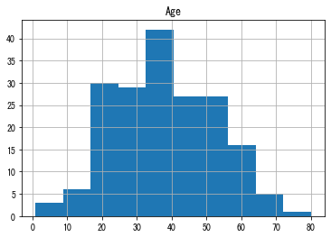
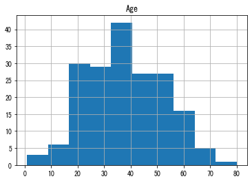

第12回b 数理工学実験２#
データ解析2#
14.3 タイタニック号の乗客データ#
from IPython.display import Image
Image(url='http://graphics8.nytimes.com/images/section/learning/general/onthisday/big/0415_big.gif')

import pandas as pd
import matplotlib
import matplotlib.pyplot as plt
%matplotlib inline
plt.rcParams['font.family'] = "MS Gothic"
CSVファイルの中身確認 （less: unix コマンド）
less train.csv
PassengerId,Survived,Pclass,Name,Sex,Age,SibSp,Parch,Ticket,Fare,Cabin,Embarked
1,0,3,"Braund, Mr. Owen Harris",male,22,1,0,A/5 21171,7.25,,S
2,1,1,"Cumings, Mrs. John Bradley (Florence Briggs Thayer)",female,38,1,0,PC 17599,71.2833,C85,C
3,1,3,"Heikkinen, Miss. Laina",female,26,0,0,STON/O2. 3101282,7.925,,S
4,1,1,"Futrelle, Mrs. Jacques Heath (Lily May Peel)",female,35,1,0,113803,53.1,C123,S
5,0,3,"Allen, Mr. William Henry",male,35,0,0,373450,8.05,,S
6,0,3,"Moran, Mr. James",male,,0,0,330877,8.4583,,Q
7,0,1,"McCarthy, Mr. Timothy J",male,54,0,0,17463,51.8625,E46,S
8,0,3,"Palsson, Master. Gosta Leonard",male,2,3,1,349909,21.075,,S
9,1,3,"Johnson, Mrs. Oscar W (Elisabeth Vilhelmina Berg)",female,27,0,2,347742,11.1333,,S
10,1,2,"Nasser, Mrs. Nicholas (Adele Achem)",female,14,1,0,237736,30.0708,,C
11,1,3,"Sandstrom, Miss. Marguerite Rut",female,4,1,1,PP 9549,16.7,G6,S
12,1,1,"Bonnell, Miss. Elizabeth",female,58,0,0,113783,26.55,C103,S
13,0,3,"Saundercock, Mr. William Henry",male,20,0,0,A/5. 2151,8.05,,S
14,0,3,"Andersson, Mr. Anders Johan",male,39,1,5,347082,31.275,,S
15,0,3,"Vestrom, Miss. Hulda Amanda Adolfina",female,14,0,0,350406,7.8542,,S
16,1,2,"Hewlett, Mrs. (Mary D Kingcome) ",female,55,0,0,248706,16,,S
17,0,3,"Rice, Master. Eugene",male,2,4,1,382652,29.125,,Q
18,1,2,"Williams, Mr. Charles Eugene",male,,0,0,244373,13,,S
19,0,3,"Vander Planke, Mrs. Julius (Emelia Maria Vandemoortele)",female,31,1,0,345763,18,,S
20,1,3,"Masselmani, Mrs. Fatima",female,,0,0,2649,7.225,,C
21,0,2,"Fynney, Mr. Joseph J",male,35,0,0,239865,26,,S
22,1,2,"Beesley, Mr. Lawrence",male,34,0,0,248698,13,D56,S
23,1,3,"McGowan, Miss. Anna ""Annie""",female,15,0,0,330923,8.0292,,Q
24,1,1,"Sloper, Mr. William Thompson",male,28,0,0,113788,35.5,A6,S
25,0,3,"Palsson, Miss. Torborg Danira",female,8,3,1,349909,21.075,,S
26,1,3,"Asplund, Mrs. Carl Oscar (Selma Augusta Emilia Johansson)",female,38,1,5,347077,31.3875,,S
27,0,3,"Emir, Mr. Farred Chehab",male,,0,0,2631,7.225,,C
28,0,1,"Fortune, Mr. Charles Alexander",male,19,3,2,19950,263,C23 C25 C27,S
29,1,3,"O'Dwyer, Miss. Ellen ""Nellie""",female,,0,0,330959,7.8792,,Q
30,0,3,"Todoroff, Mr. Lalio",male,,0,0,349216,7.8958,,S
31,0,1,"Uruchurtu, Don. Manuel E",male,40,0,0,PC 17601,27.7208,,C
32,1,1,"Spencer, Mrs. William Augustus (Marie Eugenie)",female,,1,0,PC 17569,146.5208,B78,C
33,1,3,"Glynn, Miss. Mary Agatha",female,,0,0,335677,7.75,,Q
34,0,2,"Wheadon, Mr. Edward H",male,66,0,0,C.A. 24579,10.5,,S
35,0,1,"Meyer, Mr. Edgar Joseph",male,28,1,0,PC 17604,82.1708,,C
36,0,1,"Holverson, Mr. Alexander Oskar",male,42,1,0,113789,52,,S
37,1,3,"Mamee, Mr. Hanna",male,,0,0,2677,7.2292,,C
38,0,3,"Cann, Mr. Ernest Charles",male,21,0,0,A./5. 2152,8.05,,S
39,0,3,"Vander Planke, Miss. Augusta Maria",female,18,2,0,345764,18,,S
40,1,3,"Nicola-Yarred, Miss. Jamila",female,14,1,0,2651,11.2417,,C
41,0,3,"Ahlin, Mrs. Johan (Johanna Persdotter Larsson)",female,40,1,0,7546,9.475,,S
42,0,2,"Turpin, Mrs. William John Robert (Dorothy Ann Wonnacott)",female,27,1,0,11668,21,,S
43,0,3,"Kraeff, Mr. Theodor",male,,0,0,349253,7.8958,,C
44,1,2,"Laroche, Miss. Simonne Marie Anne Andree",female,3,1,2,SC/Paris 2123,41.5792,,C
45,1,3,"Devaney, Miss. Margaret Delia",female,19,0,0,330958,7.8792,,Q
46,0,3,"Rogers, Mr. William John",male,,0,0,S.C./A.4. 23567,8.05,,S
47,0,3,"Lennon, Mr. Denis",male,,1,0,370371,15.5,,Q
48,1,3,"O'Driscoll, Miss. Bridget",female,,0,0,14311,7.75,,Q
49,0,3,"Samaan, Mr. Youssef",male,,2,0,2662,21.6792,,C
50,0,3,"Arnold-Franchi, Mrs. Josef (Josefine Franchi)",female,18,1,0,349237,17.8,,S
51,0,3,"Panula, Master. Juha Niilo",male,7,4,1,3101295,39.6875,,S
52,0,3,"Nosworthy, Mr. Richard Cater",male,21,0,0,A/4. 39886,7.8,,S
53,1,1,"Harper, Mrs. Henry Sleeper (Myna Haxtun)",female,49,1,0,PC 17572,76.7292,D33,C
54,1,2,"Faunthorpe, Mrs. Lizzie (Elizabeth Anne Wilkinson)",female,29,1,0,2926,26,,S
55,0,1,"Ostby, Mr. Engelhart Cornelius",male,65,0,1,113509,61.9792,B30,C
56,1,1,"Woolner, Mr. Hugh",male,,0,0,19947,35.5,C52,S
57,1,2,"Rugg, Miss. Emily",female,21,0,0,C.A. 31026,10.5,,S
58,0,3,"Novel, Mr. Mansouer",male,28.5,0,0,2697,7.2292,,C
59,1,2,"West, Miss. Constance Mirium",female,5,1,2,C.A. 34651,27.75,,S
60,0,3,"Goodwin, Master. William Frederick",male,11,5,2,CA 2144,46.9,,S
61,0,3,"Sirayanian, Mr. Orsen",male,22,0,0,2669,7.2292,,C
62,1,1,"Icard, Miss. Amelie",female,38,0,0,113572,80,B28,
63,0,1,"Harris, Mr. Henry Birkhardt",male,45,1,0,36973,83.475,C83,S
64,0,3,"Skoog, Master. Harald",male,4,3,2,347088,27.9,,S
65,0,1,"Stewart, Mr. Albert A",male,,0,0,PC 17605,27.7208,,C
66,1,3,"Moubarek, Master. Gerios",male,,1,1,2661,15.2458,,C
67,1,2,"Nye, Mrs. (Elizabeth Ramell)",female,29,0,0,C.A. 29395,10.5,F33,S
68,0,3,"Crease, Mr. Ernest James",male,19,0,0,S.P. 3464,8.1583,,S
69,1,3,"Andersson, Miss. Erna Alexandra",female,17,4,2,3101281,7.925,,S
70,0,3,"Kink, Mr. Vincenz",male,26,2,0,315151,8.6625,,S
71,0,2,"Jenkin, Mr. Stephen Curnow",male,32,0,0,C.A. 33111,10.5,,S
72,0,3,"Goodwin, Miss. Lillian Amy",female,16,5,2,CA 2144,46.9,,S
73,0,2,"Hood, Mr. Ambrose Jr",male,21,0,0,S.O.C. 14879,73.5,,S
74,0,3,"Chronopoulos, Mr. Apostolos",male,26,1,0,2680,14.4542,,C
75,1,3,"Bing, Mr. Lee",male,32,0,0,1601,56.4958,,S
76,0,3,"Moen, Mr. Sigurd Hansen",male,25,0,0,348123,7.65,F G73,S
77,0,3,"Staneff, Mr. Ivan",male,,0,0,349208,7.8958,,S
78,0,3,"Moutal, Mr. Rahamin Haim",male,,0,0,374746,8.05,,S
79,1,2,"Caldwell, Master. Alden Gates",male,0.83,0,2,248738,29,,S
80,1,3,"Dowdell, Miss. Elizabeth",female,30,0,0,364516,12.475,,S
81,0,3,"Waelens, Mr. Achille",male,22,0,0,345767,9,,S
82,1,3,"Sheerlinck, Mr. Jan Baptist",male,29,0,0,345779,9.5,,S
83,1,3,"McDermott, Miss. Brigdet Delia",female,,0,0,330932,7.7875,,Q
84,0,1,"Carrau, Mr. Francisco M",male,28,0,0,113059,47.1,,S
85,1,2,"Ilett, Miss. Bertha",female,17,0,0,SO/C 14885,10.5,,S
86,1,3,"Backstrom, Mrs. Karl Alfred (Maria Mathilda Gustafsson)",female,33,3,0,3101278,15.85,,S
87,0,3,"Ford, Mr. William Neal",male,16,1,3,W./C. 6608,34.375,,S
88,0,3,"Slocovski, Mr. Selman Francis",male,,0,0,SOTON/OQ 392086,8.05,,S
89,1,1,"Fortune, Miss. Mabel Helen",female,23,3,2,19950,263,C23 C25 C27,S
90,0,3,"Celotti, Mr. Francesco",male,24,0,0,343275,8.05,,S
91,0,3,"Christmann, Mr. Emil",male,29,0,0,343276,8.05,,S
92,0,3,"Andreasson, Mr. Paul Edvin",male,20,0,0,347466,7.8542,,S
93,0,1,"Chaffee, Mr. Herbert Fuller",male,46,1,0,W.E.P. 5734,61.175,E31,S
94,0,3,"Dean, Mr. Bertram Frank",male,26,1,2,C.A. 2315,20.575,,S
95,0,3,"Coxon, Mr. Daniel",male,59,0,0,364500,7.25,,S
96,0,3,"Shorney, Mr. Charles Joseph",male,,0,0,374910,8.05,,S
97,0,1,"Goldschmidt, Mr. George B",male,71,0,0,PC 17754,34.6542,A5,C
98,1,1,"Greenfield, Mr. William Bertram",male,23,0,1,PC 17759,63.3583,D10 D12,C
99,1,2,"Doling, Mrs. John T (Ada Julia Bone)",female,34,0,1,231919,23,,S
100,0,2,"Kantor, Mr. Sinai",male,34,1,0,244367,26,,S
101,0,3,"Petranec, Miss. Matilda",female,28,0,0,349245,7.8958,,S
102,0,3,"Petroff, Mr. Pastcho (""Pentcho"")",male,,0,0,349215,7.8958,,S
103,0,1,"White, Mr. Richard Frasar",male,21,0,1,35281,77.2875,D26,S
104,0,3,"Johansson, Mr. Gustaf Joel",male,33,0,0,7540,8.6542,,S
105,0,3,"Gustafsson, Mr. Anders Vilhelm",male,37,2,0,3101276,7.925,,S
106,0,3,"Mionoff, Mr. Stoytcho",male,28,0,0,349207,7.8958,,S
107,1,3,"Salkjelsvik, Miss. Anna Kristine",female,21,0,0,343120,7.65,,S
108,1,3,"Moss, Mr. Albert Johan",male,,0,0,312991,7.775,,S
109,0,3,"Rekic, Mr. Tido",male,38,0,0,349249,7.8958,,S
110,1,3,"Moran, Miss. Bertha",female,,1,0,371110,24.15,,Q
111,0,1,"Porter, Mr. Walter Chamberlain",male,47,0,0,110465,52,C110,S
112,0,3,"Zabour, Miss. Hileni",female,14.5,1,0,2665,14.4542,,C
113,0,3,"Barton, Mr. David John",male,22,0,0,324669,8.05,,S
114,0,3,"Jussila, Miss. Katriina",female,20,1,0,4136,9.825,,S
115,0,3,"Attalah, Miss. Malake",female,17,0,0,2627,14.4583,,C
116,0,3,"Pekoniemi, Mr. Edvard",male,21,0,0,STON/O 2. 3101294,7.925,,S
117,0,3,"Connors, Mr. Patrick",male,70.5,0,0,370369,7.75,,Q
118,0,2,"Turpin, Mr. William John Robert",male,29,1,0,11668,21,,S
119,0,1,"Baxter, Mr. Quigg Edmond",male,24,0,1,PC 17558,247.5208,B58 B60,C
120,0,3,"Andersson, Miss. Ellis Anna Maria",female,2,4,2,347082,31.275,,S
121,0,2,"Hickman, Mr. Stanley George",male,21,2,0,S.O.C. 14879,73.5,,S
122,0,3,"Moore, Mr. Leonard Charles",male,,0,0,A4. 54510,8.05,,S
123,0,2,"Nasser, Mr. Nicholas",male,32.5,1,0,237736,30.0708,,C
124,1,2,"Webber, Miss. Susan",female,32.5,0,0,27267,13,E101,S
125,0,1,"White, Mr. Percival Wayland",male,54,0,1,35281,77.2875,D26,S
126,1,3,"Nicola-Yarred, Master. Elias",male,12,1,0,2651,11.2417,,C
127,0,3,"McMahon, Mr. Martin",male,,0,0,370372,7.75,,Q
128,1,3,"Madsen, Mr. Fridtjof Arne",male,24,0,0,C 17369,7.1417,,S
129,1,3,"Peter, Miss. Anna",female,,1,1,2668,22.3583,F E69,C
130,0,3,"Ekstrom, Mr. Johan",male,45,0,0,347061,6.975,,S
131,0,3,"Drazenoic, Mr. Jozef",male,33,0,0,349241,7.8958,,C
132,0,3,"Coelho, Mr. Domingos Fernandeo",male,20,0,0,SOTON/O.Q. 3101307,7.05,,S
133,0,3,"Robins, Mrs. Alexander A (Grace Charity Laury)",female,47,1,0,A/5. 3337,14.5,,S
134,1,2,"Weisz, Mrs. Leopold (Mathilde Francoise Pede)",female,29,1,0,228414,26,,S
135,0,2,"Sobey, Mr. Samuel James Hayden",male,25,0,0,C.A. 29178,13,,S
136,0,2,"Richard, Mr. Emile",male,23,0,0,SC/PARIS 2133,15.0458,,C
137,1,1,"Newsom, Miss. Helen Monypeny",female,19,0,2,11752,26.2833,D47,S
138,0,1,"Futrelle, Mr. Jacques Heath",male,37,1,0,113803,53.1,C123,S
139,0,3,"Osen, Mr. Olaf Elon",male,16,0,0,7534,9.2167,,S
140,0,1,"Giglio, Mr. Victor",male,24,0,0,PC 17593,79.2,B86,C
141,0,3,"Boulos, Mrs. Joseph (Sultana)",female,,0,2,2678,15.2458,,C
142,1,3,"Nysten, Miss. Anna Sofia",female,22,0,0,347081,7.75,,S
143,1,3,"Hakkarainen, Mrs. Pekka Pietari (Elin Matilda Dolck)",female,24,1,0,STON/O2. 3101279,15.85,,S
144,0,3,"Burke, Mr. Jeremiah",male,19,0,0,365222,6.75,,Q
145,0,2,"Andrew, Mr. Edgardo Samuel",male,18,0,0,231945,11.5,,S
146,0,2,"Nicholls, Mr. Joseph Charles",male,19,1,1,C.A. 33112,36.75,,S
147,1,3,"Andersson, Mr. August Edvard (""Wennerstrom"")",male,27,0,0,350043,7.7958,,S
148,0,3,"Ford, Miss. Robina Maggie ""Ruby""",female,9,2,2,W./C. 6608,34.375,,S
149,0,2,"Navratil, Mr. Michel (""Louis M Hoffman"")",male,36.5,0,2,230080,26,F2,S
150,0,2,"Byles, Rev. Thomas Roussel Davids",male,42,0,0,244310,13,,S
151,0,2,"Bateman, Rev. Robert James",male,51,0,0,S.O.P. 1166,12.525,,S
152,1,1,"Pears, Mrs. Thomas (Edith Wearne)",female,22,1,0,113776,66.6,C2,S
153,0,3,"Meo, Mr. Alfonzo",male,55.5,0,0,A.5. 11206,8.05,,S
154,0,3,"van Billiard, Mr. Austin Blyler",male,40.5,0,2,A/5. 851,14.5,,S
155,0,3,"Olsen, Mr. Ole Martin",male,,0,0,Fa 265302,7.3125,,S
156,0,1,"Williams, Mr. Charles Duane",male,51,0,1,PC 17597,61.3792,,C
157,1,3,"Gilnagh, Miss. Katherine ""Katie""",female,16,0,0,35851,7.7333,,Q
158,0,3,"Corn, Mr. Harry",male,30,0,0,SOTON/OQ 392090,8.05,,S
159,0,3,"Smiljanic, Mr. Mile",male,,0,0,315037,8.6625,,S
160,0,3,"Sage, Master. Thomas Henry",male,,8,2,CA. 2343,69.55,,S
161,0,3,"Cribb, Mr. John Hatfield",male,44,0,1,371362,16.1,,S
162,1,2,"Watt, Mrs. James (Elizabeth ""Bessie"" Inglis Milne)",female,40,0,0,C.A. 33595,15.75,,S
163,0,3,"Bengtsson, Mr. John Viktor",male,26,0,0,347068,7.775,,S
164,0,3,"Calic, Mr. Jovo",male,17,0,0,315093,8.6625,,S
165,0,3,"Panula, Master. Eino Viljami",male,1,4,1,3101295,39.6875,,S
166,1,3,"Goldsmith, Master. Frank John William ""Frankie""",male,9,0,2,363291,20.525,,S
167,1,1,"Chibnall, Mrs. (Edith Martha Bowerman)",female,,0,1,113505,55,E33,S
168,0,3,"Skoog, Mrs. William (Anna Bernhardina Karlsson)",female,45,1,4,347088,27.9,,S
169,0,1,"Baumann, Mr. John D",male,,0,0,PC 17318,25.925,,S
170,0,3,"Ling, Mr. Lee",male,28,0,0,1601,56.4958,,S
171,0,1,"Van der hoef, Mr. Wyckoff",male,61,0,0,111240,33.5,B19,S
172,0,3,"Rice, Master. Arthur",male,4,4,1,382652,29.125,,Q
173,1,3,"Johnson, Miss. Eleanor Ileen",female,1,1,1,347742,11.1333,,S
174,0,3,"Sivola, Mr. Antti Wilhelm",male,21,0,0,STON/O 2. 3101280,7.925,,S
175,0,1,"Smith, Mr. James Clinch",male,56,0,0,17764,30.6958,A7,C
176,0,3,"Klasen, Mr. Klas Albin",male,18,1,1,350404,7.8542,,S
177,0,3,"Lefebre, Master. Henry Forbes",male,,3,1,4133,25.4667,,S
178,0,1,"Isham, Miss. Ann Elizabeth",female,50,0,0,PC 17595,28.7125,C49,C
179,0,2,"Hale, Mr. Reginald",male,30,0,0,250653,13,,S
180,0,3,"Leonard, Mr. Lionel",male,36,0,0,LINE,0,,S
181,0,3,"Sage, Miss. Constance Gladys",female,,8,2,CA. 2343,69.55,,S
182,0,2,"Pernot, Mr. Rene",male,,0,0,SC/PARIS 2131,15.05,,C
183,0,3,"Asplund, Master. Clarence Gustaf Hugo",male,9,4,2,347077,31.3875,,S
184,1,2,"Becker, Master. Richard F",male,1,2,1,230136,39,F4,S
185,1,3,"Kink-Heilmann, Miss. Luise Gretchen",female,4,0,2,315153,22.025,,S
186,0,1,"Rood, Mr. Hugh Roscoe",male,,0,0,113767,50,A32,S
187,1,3,"O'Brien, Mrs. Thomas (Johanna ""Hannah"" Godfrey)",female,,1,0,370365,15.5,,Q
188,1,1,"Romaine, Mr. Charles Hallace (""Mr C Rolmane"")",male,45,0,0,111428,26.55,,S
189,0,3,"Bourke, Mr. John",male,40,1,1,364849,15.5,,Q
190,0,3,"Turcin, Mr. Stjepan",male,36,0,0,349247,7.8958,,S
191,1,2,"Pinsky, Mrs. (Rosa)",female,32,0,0,234604,13,,S
192,0,2,"Carbines, Mr. William",male,19,0,0,28424,13,,S
193,1,3,"Andersen-Jensen, Miss. Carla Christine Nielsine",female,19,1,0,350046,7.8542,,S
194,1,2,"Navratil, Master. Michel M",male,3,1,1,230080,26,F2,S
195,1,1,"Brown, Mrs. James Joseph (Margaret Tobin)",female,44,0,0,PC 17610,27.7208,B4,C
196,1,1,"Lurette, Miss. Elise",female,58,0,0,PC 17569,146.5208,B80,C
197,0,3,"Mernagh, Mr. Robert",male,,0,0,368703,7.75,,Q
198,0,3,"Olsen, Mr. Karl Siegwart Andreas",male,42,0,1,4579,8.4042,,S
199,1,3,"Madigan, Miss. Margaret ""Maggie""",female,,0,0,370370,7.75,,Q
200,0,2,"Yrois, Miss. Henriette (""Mrs Harbeck"")",female,24,0,0,248747,13,,S
201,0,3,"Vande Walle, Mr. Nestor Cyriel",male,28,0,0,345770,9.5,,S
202,0,3,"Sage, Mr. Frederick",male,,8,2,CA. 2343,69.55,,S
203,0,3,"Johanson, Mr. Jakob Alfred",male,34,0,0,3101264,6.4958,,S
204,0,3,"Youseff, Mr. Gerious",male,45.5,0,0,2628,7.225,,C
205,1,3,"Cohen, Mr. Gurshon ""Gus""",male,18,0,0,A/5 3540,8.05,,S
206,0,3,"Strom, Miss. Telma Matilda",female,2,0,1,347054,10.4625,G6,S
207,0,3,"Backstrom, Mr. Karl Alfred",male,32,1,0,3101278,15.85,,S
208,1,3,"Albimona, Mr. Nassef Cassem",male,26,0,0,2699,18.7875,,C
209,1,3,"Carr, Miss. Helen ""Ellen""",female,16,0,0,367231,7.75,,Q
210,1,1,"Blank, Mr. Henry",male,40,0,0,112277,31,A31,C
211,0,3,"Ali, Mr. Ahmed",male,24,0,0,SOTON/O.Q. 3101311,7.05,,S
212,1,2,"Cameron, Miss. Clear Annie",female,35,0,0,F.C.C. 13528,21,,S
213,0,3,"Perkin, Mr. John Henry",male,22,0,0,A/5 21174,7.25,,S
214,0,2,"Givard, Mr. Hans Kristensen",male,30,0,0,250646,13,,S
215,0,3,"Kiernan, Mr. Philip",male,,1,0,367229,7.75,,Q
216,1,1,"Newell, Miss. Madeleine",female,31,1,0,35273,113.275,D36,C
217,1,3,"Honkanen, Miss. Eliina",female,27,0,0,STON/O2. 3101283,7.925,,S
218,0,2,"Jacobsohn, Mr. Sidney Samuel",male,42,1,0,243847,27,,S
219,1,1,"Bazzani, Miss. Albina",female,32,0,0,11813,76.2917,D15,C
220,0,2,"Harris, Mr. Walter",male,30,0,0,W/C 14208,10.5,,S
221,1,3,"Sunderland, Mr. Victor Francis",male,16,0,0,SOTON/OQ 392089,8.05,,S
222,0,2,"Bracken, Mr. James H",male,27,0,0,220367,13,,S
223,0,3,"Green, Mr. George Henry",male,51,0,0,21440,8.05,,S
224,0,3,"Nenkoff, Mr. Christo",male,,0,0,349234,7.8958,,S
225,1,1,"Hoyt, Mr. Frederick Maxfield",male,38,1,0,19943,90,C93,S
226,0,3,"Berglund, Mr. Karl Ivar Sven",male,22,0,0,PP 4348,9.35,,S
227,1,2,"Mellors, Mr. William John",male,19,0,0,SW/PP 751,10.5,,S
228,0,3,"Lovell, Mr. John Hall (""Henry"")",male,20.5,0,0,A/5 21173,7.25,,S
229,0,2,"Fahlstrom, Mr. Arne Jonas",male,18,0,0,236171,13,,S
230,0,3,"Lefebre, Miss. Mathilde",female,,3,1,4133,25.4667,,S
231,1,1,"Harris, Mrs. Henry Birkhardt (Irene Wallach)",female,35,1,0,36973,83.475,C83,S
232,0,3,"Larsson, Mr. Bengt Edvin",male,29,0,0,347067,7.775,,S
233,0,2,"Sjostedt, Mr. Ernst Adolf",male,59,0,0,237442,13.5,,S
234,1,3,"Asplund, Miss. Lillian Gertrud",female,5,4,2,347077,31.3875,,S
235,0,2,"Leyson, Mr. Robert William Norman",male,24,0,0,C.A. 29566,10.5,,S
236,0,3,"Harknett, Miss. Alice Phoebe",female,,0,0,W./C. 6609,7.55,,S
237,0,2,"Hold, Mr. Stephen",male,44,1,0,26707,26,,S
238,1,2,"Collyer, Miss. Marjorie ""Lottie""",female,8,0,2,C.A. 31921,26.25,,S
239,0,2,"Pengelly, Mr. Frederick William",male,19,0,0,28665,10.5,,S
240,0,2,"Hunt, Mr. George Henry",male,33,0,0,SCO/W 1585,12.275,,S
241,0,3,"Zabour, Miss. Thamine",female,,1,0,2665,14.4542,,C
242,1,3,"Murphy, Miss. Katherine ""Kate""",female,,1,0,367230,15.5,,Q
243,0,2,"Coleridge, Mr. Reginald Charles",male,29,0,0,W./C. 14263,10.5,,S
244,0,3,"Maenpaa, Mr. Matti Alexanteri",male,22,0,0,STON/O 2. 3101275,7.125,,S
245,0,3,"Attalah, Mr. Sleiman",male,30,0,0,2694,7.225,,C
246,0,1,"Minahan, Dr. William Edward",male,44,2,0,19928,90,C78,Q
247,0,3,"Lindahl, Miss. Agda Thorilda Viktoria",female,25,0,0,347071,7.775,,S
248,1,2,"Hamalainen, Mrs. William (Anna)",female,24,0,2,250649,14.5,,S
249,1,1,"Beckwith, Mr. Richard Leonard",male,37,1,1,11751,52.5542,D35,S
250,0,2,"Carter, Rev. Ernest Courtenay",male,54,1,0,244252,26,,S
251,0,3,"Reed, Mr. James George",male,,0,0,362316,7.25,,S
252,0,3,"Strom, Mrs. Wilhelm (Elna Matilda Persson)",female,29,1,1,347054,10.4625,G6,S
253,0,1,"Stead, Mr. William Thomas",male,62,0,0,113514,26.55,C87,S
254,0,3,"Lobb, Mr. William Arthur",male,30,1,0,A/5. 3336,16.1,,S
255,0,3,"Rosblom, Mrs. Viktor (Helena Wilhelmina)",female,41,0,2,370129,20.2125,,S
256,1,3,"Touma, Mrs. Darwis (Hanne Youssef Razi)",female,29,0,2,2650,15.2458,,C
257,1,1,"Thorne, Mrs. Gertrude Maybelle",female,,0,0,PC 17585,79.2,,C
258,1,1,"Cherry, Miss. Gladys",female,30,0,0,110152,86.5,B77,S
259,1,1,"Ward, Miss. Anna",female,35,0,0,PC 17755,512.3292,,C
260,1,2,"Parrish, Mrs. (Lutie Davis)",female,50,0,1,230433,26,,S
261,0,3,"Smith, Mr. Thomas",male,,0,0,384461,7.75,,Q
262,1,3,"Asplund, Master. Edvin Rojj Felix",male,3,4,2,347077,31.3875,,S
263,0,1,"Taussig, Mr. Emil",male,52,1,1,110413,79.65,E67,S
264,0,1,"Harrison, Mr. William",male,40,0,0,112059,0,B94,S
265,0,3,"Henry, Miss. Delia",female,,0,0,382649,7.75,,Q
266,0,2,"Reeves, Mr. David",male,36,0,0,C.A. 17248,10.5,,S
267,0,3,"Panula, Mr. Ernesti Arvid",male,16,4,1,3101295,39.6875,,S
268,1,3,"Persson, Mr. Ernst Ulrik",male,25,1,0,347083,7.775,,S
269,1,1,"Graham, Mrs. William Thompson (Edith Junkins)",female,58,0,1,PC 17582,153.4625,C125,S
270,1,1,"Bissette, Miss. Amelia",female,35,0,0,PC 17760,135.6333,C99,S
271,0,1,"Cairns, Mr. Alexander",male,,0,0,113798,31,,S
272,1,3,"Tornquist, Mr. William Henry",male,25,0,0,LINE,0,,S
273,1,2,"Mellinger, Mrs. (Elizabeth Anne Maidment)",female,41,0,1,250644,19.5,,S
274,0,1,"Natsch, Mr. Charles H",male,37,0,1,PC 17596,29.7,C118,C
275,1,3,"Healy, Miss. Hanora ""Nora""",female,,0,0,370375,7.75,,Q
276,1,1,"Andrews, Miss. Kornelia Theodosia",female,63,1,0,13502,77.9583,D7,S
277,0,3,"Lindblom, Miss. Augusta Charlotta",female,45,0,0,347073,7.75,,S
278,0,2,"Parkes, Mr. Francis ""Frank""",male,,0,0,239853,0,,S
279,0,3,"Rice, Master. Eric",male,7,4,1,382652,29.125,,Q
280,1,3,"Abbott, Mrs. Stanton (Rosa Hunt)",female,35,1,1,C.A. 2673,20.25,,S
281,0,3,"Duane, Mr. Frank",male,65,0,0,336439,7.75,,Q
282,0,3,"Olsson, Mr. Nils Johan Goransson",male,28,0,0,347464,7.8542,,S
283,0,3,"de Pelsmaeker, Mr. Alfons",male,16,0,0,345778,9.5,,S
284,1,3,"Dorking, Mr. Edward Arthur",male,19,0,0,A/5. 10482,8.05,,S
285,0,1,"Smith, Mr. Richard William",male,,0,0,113056,26,A19,S
286,0,3,"Stankovic, Mr. Ivan",male,33,0,0,349239,8.6625,,C
287,1,3,"de Mulder, Mr. Theodore",male,30,0,0,345774,9.5,,S
288,0,3,"Naidenoff, Mr. Penko",male,22,0,0,349206,7.8958,,S
289,1,2,"Hosono, Mr. Masabumi",male,42,0,0,237798,13,,S
290,1,3,"Connolly, Miss. Kate",female,22,0,0,370373,7.75,,Q
291,1,1,"Barber, Miss. Ellen ""Nellie""",female,26,0,0,19877,78.85,,S
292,1,1,"Bishop, Mrs. Dickinson H (Helen Walton)",female,19,1,0,11967,91.0792,B49,C
293,0,2,"Levy, Mr. Rene Jacques",male,36,0,0,SC/Paris 2163,12.875,D,C
294,0,3,"Haas, Miss. Aloisia",female,24,0,0,349236,8.85,,S
295,0,3,"Mineff, Mr. Ivan",male,24,0,0,349233,7.8958,,S
296,0,1,"Lewy, Mr. Ervin G",male,,0,0,PC 17612,27.7208,,C
297,0,3,"Hanna, Mr. Mansour",male,23.5,0,0,2693,7.2292,,C
298,0,1,"Allison, Miss. Helen Loraine",female,2,1,2,113781,151.55,C22 C26,S
299,1,1,"Saalfeld, Mr. Adolphe",male,,0,0,19988,30.5,C106,S
300,1,1,"Baxter, Mrs. James (Helene DeLaudeniere Chaput)",female,50,0,1,PC 17558,247.5208,B58 B60,C
301,1,3,"Kelly, Miss. Anna Katherine ""Annie Kate""",female,,0,0,9234,7.75,,Q
302,1,3,"McCoy, Mr. Bernard",male,,2,0,367226,23.25,,Q
303,0,3,"Johnson, Mr. William Cahoone Jr",male,19,0,0,LINE,0,,S
304,1,2,"Keane, Miss. Nora A",female,,0,0,226593,12.35,E101,Q
305,0,3,"Williams, Mr. Howard Hugh ""Harry""",male,,0,0,A/5 2466,8.05,,S
306,1,1,"Allison, Master. Hudson Trevor",male,0.92,1,2,113781,151.55,C22 C26,S
307,1,1,"Fleming, Miss. Margaret",female,,0,0,17421,110.8833,,C
308,1,1,"Penasco y Castellana, Mrs. Victor de Satode (Maria Josefa Perez de Soto y Vallejo)",female,17,1,0,PC 17758,108.9,C65,C
309,0,2,"Abelson, Mr. Samuel",male,30,1,0,P/PP 3381,24,,C
310,1,1,"Francatelli, Miss. Laura Mabel",female,30,0,0,PC 17485,56.9292,E36,C
311,1,1,"Hays, Miss. Margaret Bechstein",female,24,0,0,11767,83.1583,C54,C
312,1,1,"Ryerson, Miss. Emily Borie",female,18,2,2,PC 17608,262.375,B57 B59 B63 B66,C
313,0,2,"Lahtinen, Mrs. William (Anna Sylfven)",female,26,1,1,250651,26,,S
314,0,3,"Hendekovic, Mr. Ignjac",male,28,0,0,349243,7.8958,,S
315,0,2,"Hart, Mr. Benjamin",male,43,1,1,F.C.C. 13529,26.25,,S
316,1,3,"Nilsson, Miss. Helmina Josefina",female,26,0,0,347470,7.8542,,S
317,1,2,"Kantor, Mrs. Sinai (Miriam Sternin)",female,24,1,0,244367,26,,S
318,0,2,"Moraweck, Dr. Ernest",male,54,0,0,29011,14,,S
319,1,1,"Wick, Miss. Mary Natalie",female,31,0,2,36928,164.8667,C7,S
320,1,1,"Spedden, Mrs. Frederic Oakley (Margaretta Corning Stone)",female,40,1,1,16966,134.5,E34,C
321,0,3,"Dennis, Mr. Samuel",male,22,0,0,A/5 21172,7.25,,S
322,0,3,"Danoff, Mr. Yoto",male,27,0,0,349219,7.8958,,S
323,1,2,"Slayter, Miss. Hilda Mary",female,30,0,0,234818,12.35,,Q
324,1,2,"Caldwell, Mrs. Albert Francis (Sylvia Mae Harbaugh)",female,22,1,1,248738,29,,S
325,0,3,"Sage, Mr. George John Jr",male,,8,2,CA. 2343,69.55,,S
326,1,1,"Young, Miss. Marie Grice",female,36,0,0,PC 17760,135.6333,C32,C
327,0,3,"Nysveen, Mr. Johan Hansen",male,61,0,0,345364,6.2375,,S
328,1,2,"Ball, Mrs. (Ada E Hall)",female,36,0,0,28551,13,D,S
329,1,3,"Goldsmith, Mrs. Frank John (Emily Alice Brown)",female,31,1,1,363291,20.525,,S
330,1,1,"Hippach, Miss. Jean Gertrude",female,16,0,1,111361,57.9792,B18,C
331,1,3,"McCoy, Miss. Agnes",female,,2,0,367226,23.25,,Q
332,0,1,"Partner, Mr. Austen",male,45.5,0,0,113043,28.5,C124,S
333,0,1,"Graham, Mr. George Edward",male,38,0,1,PC 17582,153.4625,C91,S
334,0,3,"Vander Planke, Mr. Leo Edmondus",male,16,2,0,345764,18,,S
335,1,1,"Frauenthal, Mrs. Henry William (Clara Heinsheimer)",female,,1,0,PC 17611,133.65,,S
336,0,3,"Denkoff, Mr. Mitto",male,,0,0,349225,7.8958,,S
337,0,1,"Pears, Mr. Thomas Clinton",male,29,1,0,113776,66.6,C2,S
338,1,1,"Burns, Miss. Elizabeth Margaret",female,41,0,0,16966,134.5,E40,C
339,1,3,"Dahl, Mr. Karl Edwart",male,45,0,0,7598,8.05,,S
340,0,1,"Blackwell, Mr. Stephen Weart",male,45,0,0,113784,35.5,T,S
341,1,2,"Navratil, Master. Edmond Roger",male,2,1,1,230080,26,F2,S
342,1,1,"Fortune, Miss. Alice Elizabeth",female,24,3,2,19950,263,C23 C25 C27,S
343,0,2,"Collander, Mr. Erik Gustaf",male,28,0,0,248740,13,,S
344,0,2,"Sedgwick, Mr. Charles Frederick Waddington",male,25,0,0,244361,13,,S
345,0,2,"Fox, Mr. Stanley Hubert",male,36,0,0,229236,13,,S
346,1,2,"Brown, Miss. Amelia ""Mildred""",female,24,0,0,248733,13,F33,S
347,1,2,"Smith, Miss. Marion Elsie",female,40,0,0,31418,13,,S
348,1,3,"Davison, Mrs. Thomas Henry (Mary E Finck)",female,,1,0,386525,16.1,,S
349,1,3,"Coutts, Master. William Loch ""William""",male,3,1,1,C.A. 37671,15.9,,S
350,0,3,"Dimic, Mr. Jovan",male,42,0,0,315088,8.6625,,S
351,0,3,"Odahl, Mr. Nils Martin",male,23,0,0,7267,9.225,,S
352,0,1,"Williams-Lambert, Mr. Fletcher Fellows",male,,0,0,113510,35,C128,S
353,0,3,"Elias, Mr. Tannous",male,15,1,1,2695,7.2292,,C
354,0,3,"Arnold-Franchi, Mr. Josef",male,25,1,0,349237,17.8,,S
355,0,3,"Yousif, Mr. Wazli",male,,0,0,2647,7.225,,C
356,0,3,"Vanden Steen, Mr. Leo Peter",male,28,0,0,345783,9.5,,S
357,1,1,"Bowerman, Miss. Elsie Edith",female,22,0,1,113505,55,E33,S
358,0,2,"Funk, Miss. Annie Clemmer",female,38,0,0,237671,13,,S
359,1,3,"McGovern, Miss. Mary",female,,0,0,330931,7.8792,,Q
360,1,3,"Mockler, Miss. Helen Mary ""Ellie""",female,,0,0,330980,7.8792,,Q
361,0,3,"Skoog, Mr. Wilhelm",male,40,1,4,347088,27.9,,S
362,0,2,"del Carlo, Mr. Sebastiano",male,29,1,0,SC/PARIS 2167,27.7208,,C
363,0,3,"Barbara, Mrs. (Catherine David)",female,45,0,1,2691,14.4542,,C
364,0,3,"Asim, Mr. Adola",male,35,0,0,SOTON/O.Q. 3101310,7.05,,S
365,0,3,"O'Brien, Mr. Thomas",male,,1,0,370365,15.5,,Q
366,0,3,"Adahl, Mr. Mauritz Nils Martin",male,30,0,0,C 7076,7.25,,S
367,1,1,"Warren, Mrs. Frank Manley (Anna Sophia Atkinson)",female,60,1,0,110813,75.25,D37,C
368,1,3,"Moussa, Mrs. (Mantoura Boulos)",female,,0,0,2626,7.2292,,C
369,1,3,"Jermyn, Miss. Annie",female,,0,0,14313,7.75,,Q
370,1,1,"Aubart, Mme. Leontine Pauline",female,24,0,0,PC 17477,69.3,B35,C
371,1,1,"Harder, Mr. George Achilles",male,25,1,0,11765,55.4417,E50,C
372,0,3,"Wiklund, Mr. Jakob Alfred",male,18,1,0,3101267,6.4958,,S
373,0,3,"Beavan, Mr. William Thomas",male,19,0,0,323951,8.05,,S
374,0,1,"Ringhini, Mr. Sante",male,22,0,0,PC 17760,135.6333,,C
375,0,3,"Palsson, Miss. Stina Viola",female,3,3,1,349909,21.075,,S
376,1,1,"Meyer, Mrs. Edgar Joseph (Leila Saks)",female,,1,0,PC 17604,82.1708,,C
377,1,3,"Landergren, Miss. Aurora Adelia",female,22,0,0,C 7077,7.25,,S
378,0,1,"Widener, Mr. Harry Elkins",male,27,0,2,113503,211.5,C82,C
379,0,3,"Betros, Mr. Tannous",male,20,0,0,2648,4.0125,,C
380,0,3,"Gustafsson, Mr. Karl Gideon",male,19,0,0,347069,7.775,,S
381,1,1,"Bidois, Miss. Rosalie",female,42,0,0,PC 17757,227.525,,C
382,1,3,"Nakid, Miss. Maria (""Mary"")",female,1,0,2,2653,15.7417,,C
383,0,3,"Tikkanen, Mr. Juho",male,32,0,0,STON/O 2. 3101293,7.925,,S
384,1,1,"Holverson, Mrs. Alexander Oskar (Mary Aline Towner)",female,35,1,0,113789,52,,S
385,0,3,"Plotcharsky, Mr. Vasil",male,,0,0,349227,7.8958,,S
386,0,2,"Davies, Mr. Charles Henry",male,18,0,0,S.O.C. 14879,73.5,,S
387,0,3,"Goodwin, Master. Sidney Leonard",male,1,5,2,CA 2144,46.9,,S
388,1,2,"Buss, Miss. Kate",female,36,0,0,27849,13,,S
389,0,3,"Sadlier, Mr. Matthew",male,,0,0,367655,7.7292,,Q
390,1,2,"Lehmann, Miss. Bertha",female,17,0,0,SC 1748,12,,C
391,1,1,"Carter, Mr. William Ernest",male,36,1,2,113760,120,B96 B98,S
392,1,3,"Jansson, Mr. Carl Olof",male,21,0,0,350034,7.7958,,S
393,0,3,"Gustafsson, Mr. Johan Birger",male,28,2,0,3101277,7.925,,S
394,1,1,"Newell, Miss. Marjorie",female,23,1,0,35273,113.275,D36,C
395,1,3,"Sandstrom, Mrs. Hjalmar (Agnes Charlotta Bengtsson)",female,24,0,2,PP 9549,16.7,G6,S
396,0,3,"Johansson, Mr. Erik",male,22,0,0,350052,7.7958,,S
397,0,3,"Olsson, Miss. Elina",female,31,0,0,350407,7.8542,,S
398,0,2,"McKane, Mr. Peter David",male,46,0,0,28403,26,,S
399,0,2,"Pain, Dr. Alfred",male,23,0,0,244278,10.5,,S
400,1,2,"Trout, Mrs. William H (Jessie L)",female,28,0,0,240929,12.65,,S
401,1,3,"Niskanen, Mr. Juha",male,39,0,0,STON/O 2. 3101289,7.925,,S
402,0,3,"Adams, Mr. John",male,26,0,0,341826,8.05,,S
403,0,3,"Jussila, Miss. Mari Aina",female,21,1,0,4137,9.825,,S
404,0,3,"Hakkarainen, Mr. Pekka Pietari",male,28,1,0,STON/O2. 3101279,15.85,,S
405,0,3,"Oreskovic, Miss. Marija",female,20,0,0,315096,8.6625,,S
406,0,2,"Gale, Mr. Shadrach",male,34,1,0,28664,21,,S
407,0,3,"Widegren, Mr. Carl/Charles Peter",male,51,0,0,347064,7.75,,S
408,1,2,"Richards, Master. William Rowe",male,3,1,1,29106,18.75,,S
409,0,3,"Birkeland, Mr. Hans Martin Monsen",male,21,0,0,312992,7.775,,S
410,0,3,"Lefebre, Miss. Ida",female,,3,1,4133,25.4667,,S
411,0,3,"Sdycoff, Mr. Todor",male,,0,0,349222,7.8958,,S
412,0,3,"Hart, Mr. Henry",male,,0,0,394140,6.8583,,Q
413,1,1,"Minahan, Miss. Daisy E",female,33,1,0,19928,90,C78,Q
414,0,2,"Cunningham, Mr. Alfred Fleming",male,,0,0,239853,0,,S
415,1,3,"Sundman, Mr. Johan Julian",male,44,0,0,STON/O 2. 3101269,7.925,,S
416,0,3,"Meek, Mrs. Thomas (Annie Louise Rowley)",female,,0,0,343095,8.05,,S
417,1,2,"Drew, Mrs. James Vivian (Lulu Thorne Christian)",female,34,1,1,28220,32.5,,S
418,1,2,"Silven, Miss. Lyyli Karoliina",female,18,0,2,250652,13,,S
419,0,2,"Matthews, Mr. William John",male,30,0,0,28228,13,,S
420,0,3,"Van Impe, Miss. Catharina",female,10,0,2,345773,24.15,,S
421,0,3,"Gheorgheff, Mr. Stanio",male,,0,0,349254,7.8958,,C
422,0,3,"Charters, Mr. David",male,21,0,0,A/5. 13032,7.7333,,Q
423,0,3,"Zimmerman, Mr. Leo",male,29,0,0,315082,7.875,,S
424,0,3,"Danbom, Mrs. Ernst Gilbert (Anna Sigrid Maria Brogren)",female,28,1,1,347080,14.4,,S
425,0,3,"Rosblom, Mr. Viktor Richard",male,18,1,1,370129,20.2125,,S
426,0,3,"Wiseman, Mr. Phillippe",male,,0,0,A/4. 34244,7.25,,S
427,1,2,"Clarke, Mrs. Charles V (Ada Maria Winfield)",female,28,1,0,2003,26,,S
428,1,2,"Phillips, Miss. Kate Florence (""Mrs Kate Louise Phillips Marshall"")",female,19,0,0,250655,26,,S
429,0,3,"Flynn, Mr. James",male,,0,0,364851,7.75,,Q
430,1,3,"Pickard, Mr. Berk (Berk Trembisky)",male,32,0,0,SOTON/O.Q. 392078,8.05,E10,S
431,1,1,"Bjornstrom-Steffansson, Mr. Mauritz Hakan",male,28,0,0,110564,26.55,C52,S
432,1,3,"Thorneycroft, Mrs. Percival (Florence Kate White)",female,,1,0,376564,16.1,,S
433,1,2,"Louch, Mrs. Charles Alexander (Alice Adelaide Slow)",female,42,1,0,SC/AH 3085,26,,S
434,0,3,"Kallio, Mr. Nikolai Erland",male,17,0,0,STON/O 2. 3101274,7.125,,S
435,0,1,"Silvey, Mr. William Baird",male,50,1,0,13507,55.9,E44,S
436,1,1,"Carter, Miss. Lucile Polk",female,14,1,2,113760,120,B96 B98,S
437,0,3,"Ford, Miss. Doolina Margaret ""Daisy""",female,21,2,2,W./C. 6608,34.375,,S
438,1,2,"Richards, Mrs. Sidney (Emily Hocking)",female,24,2,3,29106,18.75,,S
439,0,1,"Fortune, Mr. Mark",male,64,1,4,19950,263,C23 C25 C27,S
440,0,2,"Kvillner, Mr. Johan Henrik Johannesson",male,31,0,0,C.A. 18723,10.5,,S
441,1,2,"Hart, Mrs. Benjamin (Esther Ada Bloomfield)",female,45,1,1,F.C.C. 13529,26.25,,S
442,0,3,"Hampe, Mr. Leon",male,20,0,0,345769,9.5,,S
443,0,3,"Petterson, Mr. Johan Emil",male,25,1,0,347076,7.775,,S
444,1,2,"Reynaldo, Ms. Encarnacion",female,28,0,0,230434,13,,S
445,1,3,"Johannesen-Bratthammer, Mr. Bernt",male,,0,0,65306,8.1125,,S
446,1,1,"Dodge, Master. Washington",male,4,0,2,33638,81.8583,A34,S
447,1,2,"Mellinger, Miss. Madeleine Violet",female,13,0,1,250644,19.5,,S
448,1,1,"Seward, Mr. Frederic Kimber",male,34,0,0,113794,26.55,,S
449,1,3,"Baclini, Miss. Marie Catherine",female,5,2,1,2666,19.2583,,C
450,1,1,"Peuchen, Major. Arthur Godfrey",male,52,0,0,113786,30.5,C104,S
451,0,2,"West, Mr. Edwy Arthur",male,36,1,2,C.A. 34651,27.75,,S
452,0,3,"Hagland, Mr. Ingvald Olai Olsen",male,,1,0,65303,19.9667,,S
453,0,1,"Foreman, Mr. Benjamin Laventall",male,30,0,0,113051,27.75,C111,C
454,1,1,"Goldenberg, Mr. Samuel L",male,49,1,0,17453,89.1042,C92,C
455,0,3,"Peduzzi, Mr. Joseph",male,,0,0,A/5 2817,8.05,,S
456,1,3,"Jalsevac, Mr. Ivan",male,29,0,0,349240,7.8958,,C
457,0,1,"Millet, Mr. Francis Davis",male,65,0,0,13509,26.55,E38,S
458,1,1,"Kenyon, Mrs. Frederick R (Marion)",female,,1,0,17464,51.8625,D21,S
459,1,2,"Toomey, Miss. Ellen",female,50,0,0,F.C.C. 13531,10.5,,S
460,0,3,"O'Connor, Mr. Maurice",male,,0,0,371060,7.75,,Q
461,1,1,"Anderson, Mr. Harry",male,48,0,0,19952,26.55,E12,S
462,0,3,"Morley, Mr. William",male,34,0,0,364506,8.05,,S
463,0,1,"Gee, Mr. Arthur H",male,47,0,0,111320,38.5,E63,S
464,0,2,"Milling, Mr. Jacob Christian",male,48,0,0,234360,13,,S
465,0,3,"Maisner, Mr. Simon",male,,0,0,A/S 2816,8.05,,S
466,0,3,"Goncalves, Mr. Manuel Estanslas",male,38,0,0,SOTON/O.Q. 3101306,7.05,,S
467,0,2,"Campbell, Mr. William",male,,0,0,239853,0,,S
468,0,1,"Smart, Mr. John Montgomery",male,56,0,0,113792,26.55,,S
469,0,3,"Scanlan, Mr. James",male,,0,0,36209,7.725,,Q
470,1,3,"Baclini, Miss. Helene Barbara",female,0.75,2,1,2666,19.2583,,C
471,0,3,"Keefe, Mr. Arthur",male,,0,0,323592,7.25,,S
472,0,3,"Cacic, Mr. Luka",male,38,0,0,315089,8.6625,,S
473,1,2,"West, Mrs. Edwy Arthur (Ada Mary Worth)",female,33,1,2,C.A. 34651,27.75,,S
474,1,2,"Jerwan, Mrs. Amin S (Marie Marthe Thuillard)",female,23,0,0,SC/AH Basle 541,13.7917,D,C
475,0,3,"Strandberg, Miss. Ida Sofia",female,22,0,0,7553,9.8375,,S
476,0,1,"Clifford, Mr. George Quincy",male,,0,0,110465,52,A14,S
477,0,2,"Renouf, Mr. Peter Henry",male,34,1,0,31027,21,,S
478,0,3,"Braund, Mr. Lewis Richard",male,29,1,0,3460,7.0458,,S
479,0,3,"Karlsson, Mr. Nils August",male,22,0,0,350060,7.5208,,S
480,1,3,"Hirvonen, Miss. Hildur E",female,2,0,1,3101298,12.2875,,S
481,0,3,"Goodwin, Master. Harold Victor",male,9,5,2,CA 2144,46.9,,S
482,0,2,"Frost, Mr. Anthony Wood ""Archie""",male,,0,0,239854,0,,S
483,0,3,"Rouse, Mr. Richard Henry",male,50,0,0,A/5 3594,8.05,,S
484,1,3,"Turkula, Mrs. (Hedwig)",female,63,0,0,4134,9.5875,,S
485,1,1,"Bishop, Mr. Dickinson H",male,25,1,0,11967,91.0792,B49,C
486,0,3,"Lefebre, Miss. Jeannie",female,,3,1,4133,25.4667,,S
487,1,1,"Hoyt, Mrs. Frederick Maxfield (Jane Anne Forby)",female,35,1,0,19943,90,C93,S
488,0,1,"Kent, Mr. Edward Austin",male,58,0,0,11771,29.7,B37,C
489,0,3,"Somerton, Mr. Francis William",male,30,0,0,A.5. 18509,8.05,,S
490,1,3,"Coutts, Master. Eden Leslie ""Neville""",male,9,1,1,C.A. 37671,15.9,,S
491,0,3,"Hagland, Mr. Konrad Mathias Reiersen",male,,1,0,65304,19.9667,,S
492,0,3,"Windelov, Mr. Einar",male,21,0,0,SOTON/OQ 3101317,7.25,,S
493,0,1,"Molson, Mr. Harry Markland",male,55,0,0,113787,30.5,C30,S
494,0,1,"Artagaveytia, Mr. Ramon",male,71,0,0,PC 17609,49.5042,,C
495,0,3,"Stanley, Mr. Edward Roland",male,21,0,0,A/4 45380,8.05,,S
496,0,3,"Yousseff, Mr. Gerious",male,,0,0,2627,14.4583,,C
497,1,1,"Eustis, Miss. Elizabeth Mussey",female,54,1,0,36947,78.2667,D20,C
498,0,3,"Shellard, Mr. Frederick William",male,,0,0,C.A. 6212,15.1,,S
499,0,1,"Allison, Mrs. Hudson J C (Bessie Waldo Daniels)",female,25,1,2,113781,151.55,C22 C26,S
500,0,3,"Svensson, Mr. Olof",male,24,0,0,350035,7.7958,,S
501,0,3,"Calic, Mr. Petar",male,17,0,0,315086,8.6625,,S
502,0,3,"Canavan, Miss. Mary",female,21,0,0,364846,7.75,,Q
503,0,3,"O'Sullivan, Miss. Bridget Mary",female,,0,0,330909,7.6292,,Q
504,0,3,"Laitinen, Miss. Kristina Sofia",female,37,0,0,4135,9.5875,,S
505,1,1,"Maioni, Miss. Roberta",female,16,0,0,110152,86.5,B79,S
506,0,1,"Penasco y Castellana, Mr. Victor de Satode",male,18,1,0,PC 17758,108.9,C65,C
507,1,2,"Quick, Mrs. Frederick Charles (Jane Richards)",female,33,0,2,26360,26,,S
508,1,1,"Bradley, Mr. George (""George Arthur Brayton"")",male,,0,0,111427,26.55,,S
509,0,3,"Olsen, Mr. Henry Margido",male,28,0,0,C 4001,22.525,,S
510,1,3,"Lang, Mr. Fang",male,26,0,0,1601,56.4958,,S
511,1,3,"Daly, Mr. Eugene Patrick",male,29,0,0,382651,7.75,,Q
512,0,3,"Webber, Mr. James",male,,0,0,SOTON/OQ 3101316,8.05,,S
513,1,1,"McGough, Mr. James Robert",male,36,0,0,PC 17473,26.2875,E25,S
514,1,1,"Rothschild, Mrs. Martin (Elizabeth L. Barrett)",female,54,1,0,PC 17603,59.4,,C
515,0,3,"Coleff, Mr. Satio",male,24,0,0,349209,7.4958,,S
516,0,1,"Walker, Mr. William Anderson",male,47,0,0,36967,34.0208,D46,S
517,1,2,"Lemore, Mrs. (Amelia Milley)",female,34,0,0,C.A. 34260,10.5,F33,S
518,0,3,"Ryan, Mr. Patrick",male,,0,0,371110,24.15,,Q
519,1,2,"Angle, Mrs. William A (Florence ""Mary"" Agnes Hughes)",female,36,1,0,226875,26,,S
520,0,3,"Pavlovic, Mr. Stefo",male,32,0,0,349242,7.8958,,S
521,1,1,"Perreault, Miss. Anne",female,30,0,0,12749,93.5,B73,S
522,0,3,"Vovk, Mr. Janko",male,22,0,0,349252,7.8958,,S
523,0,3,"Lahoud, Mr. Sarkis",male,,0,0,2624,7.225,,C
524,1,1,"Hippach, Mrs. Louis Albert (Ida Sophia Fischer)",female,44,0,1,111361,57.9792,B18,C
525,0,3,"Kassem, Mr. Fared",male,,0,0,2700,7.2292,,C
526,0,3,"Farrell, Mr. James",male,40.5,0,0,367232,7.75,,Q
527,1,2,"Ridsdale, Miss. Lucy",female,50,0,0,W./C. 14258,10.5,,S
528,0,1,"Farthing, Mr. John",male,,0,0,PC 17483,221.7792,C95,S
529,0,3,"Salonen, Mr. Johan Werner",male,39,0,0,3101296,7.925,,S
530,0,2,"Hocking, Mr. Richard George",male,23,2,1,29104,11.5,,S
531,1,2,"Quick, Miss. Phyllis May",female,2,1,1,26360,26,,S
532,0,3,"Toufik, Mr. Nakli",male,,0,0,2641,7.2292,,C
533,0,3,"Elias, Mr. Joseph Jr",male,17,1,1,2690,7.2292,,C
534,1,3,"Peter, Mrs. Catherine (Catherine Rizk)",female,,0,2,2668,22.3583,,C
535,0,3,"Cacic, Miss. Marija",female,30,0,0,315084,8.6625,,S
536,1,2,"Hart, Miss. Eva Miriam",female,7,0,2,F.C.C. 13529,26.25,,S
537,0,1,"Butt, Major. Archibald Willingham",male,45,0,0,113050,26.55,B38,S
538,1,1,"LeRoy, Miss. Bertha",female,30,0,0,PC 17761,106.425,,C
539,0,3,"Risien, Mr. Samuel Beard",male,,0,0,364498,14.5,,S
540,1,1,"Frolicher, Miss. Hedwig Margaritha",female,22,0,2,13568,49.5,B39,C
541,1,1,"Crosby, Miss. Harriet R",female,36,0,2,WE/P 5735,71,B22,S
542,0,3,"Andersson, Miss. Ingeborg Constanzia",female,9,4,2,347082,31.275,,S
543,0,3,"Andersson, Miss. Sigrid Elisabeth",female,11,4,2,347082,31.275,,S
544,1,2,"Beane, Mr. Edward",male,32,1,0,2908,26,,S
545,0,1,"Douglas, Mr. Walter Donald",male,50,1,0,PC 17761,106.425,C86,C
546,0,1,"Nicholson, Mr. Arthur Ernest",male,64,0,0,693,26,,S
547,1,2,"Beane, Mrs. Edward (Ethel Clarke)",female,19,1,0,2908,26,,S
548,1,2,"Padro y Manent, Mr. Julian",male,,0,0,SC/PARIS 2146,13.8625,,C
549,0,3,"Goldsmith, Mr. Frank John",male,33,1,1,363291,20.525,,S
550,1,2,"Davies, Master. John Morgan Jr",male,8,1,1,C.A. 33112,36.75,,S
551,1,1,"Thayer, Mr. John Borland Jr",male,17,0,2,17421,110.8833,C70,C
552,0,2,"Sharp, Mr. Percival James R",male,27,0,0,244358,26,,S
553,0,3,"O'Brien, Mr. Timothy",male,,0,0,330979,7.8292,,Q
554,1,3,"Leeni, Mr. Fahim (""Philip Zenni"")",male,22,0,0,2620,7.225,,C
555,1,3,"Ohman, Miss. Velin",female,22,0,0,347085,7.775,,S
556,0,1,"Wright, Mr. George",male,62,0,0,113807,26.55,,S
557,1,1,"Duff Gordon, Lady. (Lucille Christiana Sutherland) (""Mrs Morgan"")",female,48,1,0,11755,39.6,A16,C
558,0,1,"Robbins, Mr. Victor",male,,0,0,PC 17757,227.525,,C
559,1,1,"Taussig, Mrs. Emil (Tillie Mandelbaum)",female,39,1,1,110413,79.65,E67,S
560,1,3,"de Messemaeker, Mrs. Guillaume Joseph (Emma)",female,36,1,0,345572,17.4,,S
561,0,3,"Morrow, Mr. Thomas Rowan",male,,0,0,372622,7.75,,Q
562,0,3,"Sivic, Mr. Husein",male,40,0,0,349251,7.8958,,S
563,0,2,"Norman, Mr. Robert Douglas",male,28,0,0,218629,13.5,,S
564,0,3,"Simmons, Mr. John",male,,0,0,SOTON/OQ 392082,8.05,,S
565,0,3,"Meanwell, Miss. (Marion Ogden)",female,,0,0,SOTON/O.Q. 392087,8.05,,S
566,0,3,"Davies, Mr. Alfred J",male,24,2,0,A/4 48871,24.15,,S
567,0,3,"Stoytcheff, Mr. Ilia",male,19,0,0,349205,7.8958,,S
568,0,3,"Palsson, Mrs. Nils (Alma Cornelia Berglund)",female,29,0,4,349909,21.075,,S
569,0,3,"Doharr, Mr. Tannous",male,,0,0,2686,7.2292,,C
570,1,3,"Jonsson, Mr. Carl",male,32,0,0,350417,7.8542,,S
571,1,2,"Harris, Mr. George",male,62,0,0,S.W./PP 752,10.5,,S
572,1,1,"Appleton, Mrs. Edward Dale (Charlotte Lamson)",female,53,2,0,11769,51.4792,C101,S
573,1,1,"Flynn, Mr. John Irwin (""Irving"")",male,36,0,0,PC 17474,26.3875,E25,S
574,1,3,"Kelly, Miss. Mary",female,,0,0,14312,7.75,,Q
575,0,3,"Rush, Mr. Alfred George John",male,16,0,0,A/4. 20589,8.05,,S
576,0,3,"Patchett, Mr. George",male,19,0,0,358585,14.5,,S
577,1,2,"Garside, Miss. Ethel",female,34,0,0,243880,13,,S
578,1,1,"Silvey, Mrs. William Baird (Alice Munger)",female,39,1,0,13507,55.9,E44,S
579,0,3,"Caram, Mrs. Joseph (Maria Elias)",female,,1,0,2689,14.4583,,C
580,1,3,"Jussila, Mr. Eiriik",male,32,0,0,STON/O 2. 3101286,7.925,,S
581,1,2,"Christy, Miss. Julie Rachel",female,25,1,1,237789,30,,S
582,1,1,"Thayer, Mrs. John Borland (Marian Longstreth Morris)",female,39,1,1,17421,110.8833,C68,C
583,0,2,"Downton, Mr. William James",male,54,0,0,28403,26,,S
584,0,1,"Ross, Mr. John Hugo",male,36,0,0,13049,40.125,A10,C
585,0,3,"Paulner, Mr. Uscher",male,,0,0,3411,8.7125,,C
586,1,1,"Taussig, Miss. Ruth",female,18,0,2,110413,79.65,E68,S
587,0,2,"Jarvis, Mr. John Denzil",male,47,0,0,237565,15,,S
588,1,1,"Frolicher-Stehli, Mr. Maxmillian",male,60,1,1,13567,79.2,B41,C
589,0,3,"Gilinski, Mr. Eliezer",male,22,0,0,14973,8.05,,S
590,0,3,"Murdlin, Mr. Joseph",male,,0,0,A./5. 3235,8.05,,S
591,0,3,"Rintamaki, Mr. Matti",male,35,0,0,STON/O 2. 3101273,7.125,,S
592,1,1,"Stephenson, Mrs. Walter Bertram (Martha Eustis)",female,52,1,0,36947,78.2667,D20,C
593,0,3,"Elsbury, Mr. William James",male,47,0,0,A/5 3902,7.25,,S
594,0,3,"Bourke, Miss. Mary",female,,0,2,364848,7.75,,Q
595,0,2,"Chapman, Mr. John Henry",male,37,1,0,SC/AH 29037,26,,S
596,0,3,"Van Impe, Mr. Jean Baptiste",male,36,1,1,345773,24.15,,S
597,1,2,"Leitch, Miss. Jessie Wills",female,,0,0,248727,33,,S
598,0,3,"Johnson, Mr. Alfred",male,49,0,0,LINE,0,,S
599,0,3,"Boulos, Mr. Hanna",male,,0,0,2664,7.225,,C
600,1,1,"Duff Gordon, Sir. Cosmo Edmund (""Mr Morgan"")",male,49,1,0,PC 17485,56.9292,A20,C
601,1,2,"Jacobsohn, Mrs. Sidney Samuel (Amy Frances Christy)",female,24,2,1,243847,27,,S
602,0,3,"Slabenoff, Mr. Petco",male,,0,0,349214,7.8958,,S
603,0,1,"Harrington, Mr. Charles H",male,,0,0,113796,42.4,,S
604,0,3,"Torber, Mr. Ernst William",male,44,0,0,364511,8.05,,S
605,1,1,"Homer, Mr. Harry (""Mr E Haven"")",male,35,0,0,111426,26.55,,C
606,0,3,"Lindell, Mr. Edvard Bengtsson",male,36,1,0,349910,15.55,,S
607,0,3,"Karaic, Mr. Milan",male,30,0,0,349246,7.8958,,S
608,1,1,"Daniel, Mr. Robert Williams",male,27,0,0,113804,30.5,,S
609,1,2,"Laroche, Mrs. Joseph (Juliette Marie Louise Lafargue)",female,22,1,2,SC/Paris 2123,41.5792,,C
610,1,1,"Shutes, Miss. Elizabeth W",female,40,0,0,PC 17582,153.4625,C125,S
611,0,3,"Andersson, Mrs. Anders Johan (Alfrida Konstantia Brogren)",female,39,1,5,347082,31.275,,S
612,0,3,"Jardin, Mr. Jose Neto",male,,0,0,SOTON/O.Q. 3101305,7.05,,S
613,1,3,"Murphy, Miss. Margaret Jane",female,,1,0,367230,15.5,,Q
614,0,3,"Horgan, Mr. John",male,,0,0,370377,7.75,,Q
615,0,3,"Brocklebank, Mr. William Alfred",male,35,0,0,364512,8.05,,S
616,1,2,"Herman, Miss. Alice",female,24,1,2,220845,65,,S
617,0,3,"Danbom, Mr. Ernst Gilbert",male,34,1,1,347080,14.4,,S
618,0,3,"Lobb, Mrs. William Arthur (Cordelia K Stanlick)",female,26,1,0,A/5. 3336,16.1,,S
619,1,2,"Becker, Miss. Marion Louise",female,4,2,1,230136,39,F4,S
620,0,2,"Gavey, Mr. Lawrence",male,26,0,0,31028,10.5,,S
621,0,3,"Yasbeck, Mr. Antoni",male,27,1,0,2659,14.4542,,C
622,1,1,"Kimball, Mr. Edwin Nelson Jr",male,42,1,0,11753,52.5542,D19,S
623,1,3,"Nakid, Mr. Sahid",male,20,1,1,2653,15.7417,,C
624,0,3,"Hansen, Mr. Henry Damsgaard",male,21,0,0,350029,7.8542,,S
625,0,3,"Bowen, Mr. David John ""Dai""",male,21,0,0,54636,16.1,,S
626,0,1,"Sutton, Mr. Frederick",male,61,0,0,36963,32.3208,D50,S
627,0,2,"Kirkland, Rev. Charles Leonard",male,57,0,0,219533,12.35,,Q
628,1,1,"Longley, Miss. Gretchen Fiske",female,21,0,0,13502,77.9583,D9,S
629,0,3,"Bostandyeff, Mr. Guentcho",male,26,0,0,349224,7.8958,,S
630,0,3,"O'Connell, Mr. Patrick D",male,,0,0,334912,7.7333,,Q
631,1,1,"Barkworth, Mr. Algernon Henry Wilson",male,80,0,0,27042,30,A23,S
632,0,3,"Lundahl, Mr. Johan Svensson",male,51,0,0,347743,7.0542,,S
633,1,1,"Stahelin-Maeglin, Dr. Max",male,32,0,0,13214,30.5,B50,C
634,0,1,"Parr, Mr. William Henry Marsh",male,,0,0,112052,0,,S
635,0,3,"Skoog, Miss. Mabel",female,9,3,2,347088,27.9,,S
636,1,2,"Davis, Miss. Mary",female,28,0,0,237668,13,,S
637,0,3,"Leinonen, Mr. Antti Gustaf",male,32,0,0,STON/O 2. 3101292,7.925,,S
638,0,2,"Collyer, Mr. Harvey",male,31,1,1,C.A. 31921,26.25,,S
639,0,3,"Panula, Mrs. Juha (Maria Emilia Ojala)",female,41,0,5,3101295,39.6875,,S
640,0,3,"Thorneycroft, Mr. Percival",male,,1,0,376564,16.1,,S
641,0,3,"Jensen, Mr. Hans Peder",male,20,0,0,350050,7.8542,,S
642,1,1,"Sagesser, Mlle. Emma",female,24,0,0,PC 17477,69.3,B35,C
643,0,3,"Skoog, Miss. Margit Elizabeth",female,2,3,2,347088,27.9,,S
644,1,3,"Foo, Mr. Choong",male,,0,0,1601,56.4958,,S
645,1,3,"Baclini, Miss. Eugenie",female,0.75,2,1,2666,19.2583,,C
646,1,1,"Harper, Mr. Henry Sleeper",male,48,1,0,PC 17572,76.7292,D33,C
647,0,3,"Cor, Mr. Liudevit",male,19,0,0,349231,7.8958,,S
648,1,1,"Simonius-Blumer, Col. Oberst Alfons",male,56,0,0,13213,35.5,A26,C
649,0,3,"Willey, Mr. Edward",male,,0,0,S.O./P.P. 751,7.55,,S
650,1,3,"Stanley, Miss. Amy Zillah Elsie",female,23,0,0,CA. 2314,7.55,,S
651,0,3,"Mitkoff, Mr. Mito",male,,0,0,349221,7.8958,,S
652,1,2,"Doling, Miss. Elsie",female,18,0,1,231919,23,,S
653,0,3,"Kalvik, Mr. Johannes Halvorsen",male,21,0,0,8475,8.4333,,S
654,1,3,"O'Leary, Miss. Hanora ""Norah""",female,,0,0,330919,7.8292,,Q
655,0,3,"Hegarty, Miss. Hanora ""Nora""",female,18,0,0,365226,6.75,,Q
656,0,2,"Hickman, Mr. Leonard Mark",male,24,2,0,S.O.C. 14879,73.5,,S
657,0,3,"Radeff, Mr. Alexander",male,,0,0,349223,7.8958,,S
658,0,3,"Bourke, Mrs. John (Catherine)",female,32,1,1,364849,15.5,,Q
659,0,2,"Eitemiller, Mr. George Floyd",male,23,0,0,29751,13,,S
660,0,1,"Newell, Mr. Arthur Webster",male,58,0,2,35273,113.275,D48,C
661,1,1,"Frauenthal, Dr. Henry William",male,50,2,0,PC 17611,133.65,,S
662,0,3,"Badt, Mr. Mohamed",male,40,0,0,2623,7.225,,C
663,0,1,"Colley, Mr. Edward Pomeroy",male,47,0,0,5727,25.5875,E58,S
664,0,3,"Coleff, Mr. Peju",male,36,0,0,349210,7.4958,,S
665,1,3,"Lindqvist, Mr. Eino William",male,20,1,0,STON/O 2. 3101285,7.925,,S
666,0,2,"Hickman, Mr. Lewis",male,32,2,0,S.O.C. 14879,73.5,,S
667,0,2,"Butler, Mr. Reginald Fenton",male,25,0,0,234686,13,,S
668,0,3,"Rommetvedt, Mr. Knud Paust",male,,0,0,312993,7.775,,S
669,0,3,"Cook, Mr. Jacob",male,43,0,0,A/5 3536,8.05,,S
670,1,1,"Taylor, Mrs. Elmer Zebley (Juliet Cummins Wright)",female,,1,0,19996,52,C126,S
671,1,2,"Brown, Mrs. Thomas William Solomon (Elizabeth Catherine Ford)",female,40,1,1,29750,39,,S
672,0,1,"Davidson, Mr. Thornton",male,31,1,0,F.C. 12750,52,B71,S
673,0,2,"Mitchell, Mr. Henry Michael",male,70,0,0,C.A. 24580,10.5,,S
674,1,2,"Wilhelms, Mr. Charles",male,31,0,0,244270,13,,S
675,0,2,"Watson, Mr. Ennis Hastings",male,,0,0,239856,0,,S
676,0,3,"Edvardsson, Mr. Gustaf Hjalmar",male,18,0,0,349912,7.775,,S
677,0,3,"Sawyer, Mr. Frederick Charles",male,24.5,0,0,342826,8.05,,S
678,1,3,"Turja, Miss. Anna Sofia",female,18,0,0,4138,9.8417,,S
679,0,3,"Goodwin, Mrs. Frederick (Augusta Tyler)",female,43,1,6,CA 2144,46.9,,S
680,1,1,"Cardeza, Mr. Thomas Drake Martinez",male,36,0,1,PC 17755,512.3292,B51 B53 B55,C
681,0,3,"Peters, Miss. Katie",female,,0,0,330935,8.1375,,Q
682,1,1,"Hassab, Mr. Hammad",male,27,0,0,PC 17572,76.7292,D49,C
683,0,3,"Olsvigen, Mr. Thor Anderson",male,20,0,0,6563,9.225,,S
684,0,3,"Goodwin, Mr. Charles Edward",male,14,5,2,CA 2144,46.9,,S
685,0,2,"Brown, Mr. Thomas William Solomon",male,60,1,1,29750,39,,S
686,0,2,"Laroche, Mr. Joseph Philippe Lemercier",male,25,1,2,SC/Paris 2123,41.5792,,C
687,0,3,"Panula, Mr. Jaako Arnold",male,14,4,1,3101295,39.6875,,S
688,0,3,"Dakic, Mr. Branko",male,19,0,0,349228,10.1708,,S
689,0,3,"Fischer, Mr. Eberhard Thelander",male,18,0,0,350036,7.7958,,S
690,1,1,"Madill, Miss. Georgette Alexandra",female,15,0,1,24160,211.3375,B5,S
691,1,1,"Dick, Mr. Albert Adrian",male,31,1,0,17474,57,B20,S
692,1,3,"Karun, Miss. Manca",female,4,0,1,349256,13.4167,,C
693,1,3,"Lam, Mr. Ali",male,,0,0,1601,56.4958,,S
694,0,3,"Saad, Mr. Khalil",male,25,0,0,2672,7.225,,C
695,0,1,"Weir, Col. John",male,60,0,0,113800,26.55,,S
696,0,2,"Chapman, Mr. Charles Henry",male,52,0,0,248731,13.5,,S
697,0,3,"Kelly, Mr. James",male,44,0,0,363592,8.05,,S
698,1,3,"Mullens, Miss. Katherine ""Katie""",female,,0,0,35852,7.7333,,Q
699,0,1,"Thayer, Mr. John Borland",male,49,1,1,17421,110.8833,C68,C
700,0,3,"Humblen, Mr. Adolf Mathias Nicolai Olsen",male,42,0,0,348121,7.65,F G63,S
701,1,1,"Astor, Mrs. John Jacob (Madeleine Talmadge Force)",female,18,1,0,PC 17757,227.525,C62 C64,C
702,1,1,"Silverthorne, Mr. Spencer Victor",male,35,0,0,PC 17475,26.2875,E24,S
703,0,3,"Barbara, Miss. Saiide",female,18,0,1,2691,14.4542,,C
704,0,3,"Gallagher, Mr. Martin",male,25,0,0,36864,7.7417,,Q
705,0,3,"Hansen, Mr. Henrik Juul",male,26,1,0,350025,7.8542,,S
706,0,2,"Morley, Mr. Henry Samuel (""Mr Henry Marshall"")",male,39,0,0,250655,26,,S
707,1,2,"Kelly, Mrs. Florence ""Fannie""",female,45,0,0,223596,13.5,,S
708,1,1,"Calderhead, Mr. Edward Pennington",male,42,0,0,PC 17476,26.2875,E24,S
709,1,1,"Cleaver, Miss. Alice",female,22,0,0,113781,151.55,,S
710,1,3,"Moubarek, Master. Halim Gonios (""William George"")",male,,1,1,2661,15.2458,,C
711,1,1,"Mayne, Mlle. Berthe Antonine (""Mrs de Villiers"")",female,24,0,0,PC 17482,49.5042,C90,C
712,0,1,"Klaber, Mr. Herman",male,,0,0,113028,26.55,C124,S
713,1,1,"Taylor, Mr. Elmer Zebley",male,48,1,0,19996,52,C126,S
714,0,3,"Larsson, Mr. August Viktor",male,29,0,0,7545,9.4833,,S
715,0,2,"Greenberg, Mr. Samuel",male,52,0,0,250647,13,,S
716,0,3,"Soholt, Mr. Peter Andreas Lauritz Andersen",male,19,0,0,348124,7.65,F G73,S
717,1,1,"Endres, Miss. Caroline Louise",female,38,0,0,PC 17757,227.525,C45,C
718,1,2,"Troutt, Miss. Edwina Celia ""Winnie""",female,27,0,0,34218,10.5,E101,S
719,0,3,"McEvoy, Mr. Michael",male,,0,0,36568,15.5,,Q
720,0,3,"Johnson, Mr. Malkolm Joackim",male,33,0,0,347062,7.775,,S
721,1,2,"Harper, Miss. Annie Jessie ""Nina""",female,6,0,1,248727,33,,S
722,0,3,"Jensen, Mr. Svend Lauritz",male,17,1,0,350048,7.0542,,S
723,0,2,"Gillespie, Mr. William Henry",male,34,0,0,12233,13,,S
724,0,2,"Hodges, Mr. Henry Price",male,50,0,0,250643,13,,S
725,1,1,"Chambers, Mr. Norman Campbell",male,27,1,0,113806,53.1,E8,S
726,0,3,"Oreskovic, Mr. Luka",male,20,0,0,315094,8.6625,,S
727,1,2,"Renouf, Mrs. Peter Henry (Lillian Jefferys)",female,30,3,0,31027,21,,S
728,1,3,"Mannion, Miss. Margareth",female,,0,0,36866,7.7375,,Q
729,0,2,"Bryhl, Mr. Kurt Arnold Gottfrid",male,25,1,0,236853,26,,S
730,0,3,"Ilmakangas, Miss. Pieta Sofia",female,25,1,0,STON/O2. 3101271,7.925,,S
731,1,1,"Allen, Miss. Elisabeth Walton",female,29,0,0,24160,211.3375,B5,S
732,0,3,"Hassan, Mr. Houssein G N",male,11,0,0,2699,18.7875,,C
733,0,2,"Knight, Mr. Robert J",male,,0,0,239855,0,,S
734,0,2,"Berriman, Mr. William John",male,23,0,0,28425,13,,S
735,0,2,"Troupiansky, Mr. Moses Aaron",male,23,0,0,233639,13,,S
736,0,3,"Williams, Mr. Leslie",male,28.5,0,0,54636,16.1,,S
737,0,3,"Ford, Mrs. Edward (Margaret Ann Watson)",female,48,1,3,W./C. 6608,34.375,,S
738,1,1,"Lesurer, Mr. Gustave J",male,35,0,0,PC 17755,512.3292,B101,C
739,0,3,"Ivanoff, Mr. Kanio",male,,0,0,349201,7.8958,,S
740,0,3,"Nankoff, Mr. Minko",male,,0,0,349218,7.8958,,S
741,1,1,"Hawksford, Mr. Walter James",male,,0,0,16988,30,D45,S
742,0,1,"Cavendish, Mr. Tyrell William",male,36,1,0,19877,78.85,C46,S
743,1,1,"Ryerson, Miss. Susan Parker ""Suzette""",female,21,2,2,PC 17608,262.375,B57 B59 B63 B66,C
744,0,3,"McNamee, Mr. Neal",male,24,1,0,376566,16.1,,S
745,1,3,"Stranden, Mr. Juho",male,31,0,0,STON/O 2. 3101288,7.925,,S
746,0,1,"Crosby, Capt. Edward Gifford",male,70,1,1,WE/P 5735,71,B22,S
747,0,3,"Abbott, Mr. Rossmore Edward",male,16,1,1,C.A. 2673,20.25,,S
748,1,2,"Sinkkonen, Miss. Anna",female,30,0,0,250648,13,,S
749,0,1,"Marvin, Mr. Daniel Warner",male,19,1,0,113773,53.1,D30,S
750,0,3,"Connaghton, Mr. Michael",male,31,0,0,335097,7.75,,Q
751,1,2,"Wells, Miss. Joan",female,4,1,1,29103,23,,S
752,1,3,"Moor, Master. Meier",male,6,0,1,392096,12.475,E121,S
753,0,3,"Vande Velde, Mr. Johannes Joseph",male,33,0,0,345780,9.5,,S
754,0,3,"Jonkoff, Mr. Lalio",male,23,0,0,349204,7.8958,,S
755,1,2,"Herman, Mrs. Samuel (Jane Laver)",female,48,1,2,220845,65,,S
756,1,2,"Hamalainen, Master. Viljo",male,0.67,1,1,250649,14.5,,S
757,0,3,"Carlsson, Mr. August Sigfrid",male,28,0,0,350042,7.7958,,S
758,0,2,"Bailey, Mr. Percy Andrew",male,18,0,0,29108,11.5,,S
759,0,3,"Theobald, Mr. Thomas Leonard",male,34,0,0,363294,8.05,,S
760,1,1,"Rothes, the Countess. of (Lucy Noel Martha Dyer-Edwards)",female,33,0,0,110152,86.5,B77,S
761,0,3,"Garfirth, Mr. John",male,,0,0,358585,14.5,,S
762,0,3,"Nirva, Mr. Iisakki Antino Aijo",male,41,0,0,SOTON/O2 3101272,7.125,,S
763,1,3,"Barah, Mr. Hanna Assi",male,20,0,0,2663,7.2292,,C
764,1,1,"Carter, Mrs. William Ernest (Lucile Polk)",female,36,1,2,113760,120,B96 B98,S
765,0,3,"Eklund, Mr. Hans Linus",male,16,0,0,347074,7.775,,S
766,1,1,"Hogeboom, Mrs. John C (Anna Andrews)",female,51,1,0,13502,77.9583,D11,S
767,0,1,"Brewe, Dr. Arthur Jackson",male,,0,0,112379,39.6,,C
768,0,3,"Mangan, Miss. Mary",female,30.5,0,0,364850,7.75,,Q
769,0,3,"Moran, Mr. Daniel J",male,,1,0,371110,24.15,,Q
770,0,3,"Gronnestad, Mr. Daniel Danielsen",male,32,0,0,8471,8.3625,,S
771,0,3,"Lievens, Mr. Rene Aime",male,24,0,0,345781,9.5,,S
772,0,3,"Jensen, Mr. Niels Peder",male,48,0,0,350047,7.8542,,S
773,0,2,"Mack, Mrs. (Mary)",female,57,0,0,S.O./P.P. 3,10.5,E77,S
774,0,3,"Elias, Mr. Dibo",male,,0,0,2674,7.225,,C
775,1,2,"Hocking, Mrs. Elizabeth (Eliza Needs)",female,54,1,3,29105,23,,S
776,0,3,"Myhrman, Mr. Pehr Fabian Oliver Malkolm",male,18,0,0,347078,7.75,,S
777,0,3,"Tobin, Mr. Roger",male,,0,0,383121,7.75,F38,Q
778,1,3,"Emanuel, Miss. Virginia Ethel",female,5,0,0,364516,12.475,,S
779,0,3,"Kilgannon, Mr. Thomas J",male,,0,0,36865,7.7375,,Q
780,1,1,"Robert, Mrs. Edward Scott (Elisabeth Walton McMillan)",female,43,0,1,24160,211.3375,B3,S
781,1,3,"Ayoub, Miss. Banoura",female,13,0,0,2687,7.2292,,C
782,1,1,"Dick, Mrs. Albert Adrian (Vera Gillespie)",female,17,1,0,17474,57,B20,S
783,0,1,"Long, Mr. Milton Clyde",male,29,0,0,113501,30,D6,S
784,0,3,"Johnston, Mr. Andrew G",male,,1,2,W./C. 6607,23.45,,S
785,0,3,"Ali, Mr. William",male,25,0,0,SOTON/O.Q. 3101312,7.05,,S
786,0,3,"Harmer, Mr. Abraham (David Lishin)",male,25,0,0,374887,7.25,,S
787,1,3,"Sjoblom, Miss. Anna Sofia",female,18,0,0,3101265,7.4958,,S
788,0,3,"Rice, Master. George Hugh",male,8,4,1,382652,29.125,,Q
789,1,3,"Dean, Master. Bertram Vere",male,1,1,2,C.A. 2315,20.575,,S
790,0,1,"Guggenheim, Mr. Benjamin",male,46,0,0,PC 17593,79.2,B82 B84,C
791,0,3,"Keane, Mr. Andrew ""Andy""",male,,0,0,12460,7.75,,Q
792,0,2,"Gaskell, Mr. Alfred",male,16,0,0,239865,26,,S
793,0,3,"Sage, Miss. Stella Anna",female,,8,2,CA. 2343,69.55,,S
794,0,1,"Hoyt, Mr. William Fisher",male,,0,0,PC 17600,30.6958,,C
795,0,3,"Dantcheff, Mr. Ristiu",male,25,0,0,349203,7.8958,,S
796,0,2,"Otter, Mr. Richard",male,39,0,0,28213,13,,S
797,1,1,"Leader, Dr. Alice (Farnham)",female,49,0,0,17465,25.9292,D17,S
798,1,3,"Osman, Mrs. Mara",female,31,0,0,349244,8.6833,,S
799,0,3,"Ibrahim Shawah, Mr. Yousseff",male,30,0,0,2685,7.2292,,C
800,0,3,"Van Impe, Mrs. Jean Baptiste (Rosalie Paula Govaert)",female,30,1,1,345773,24.15,,S
801,0,2,"Ponesell, Mr. Martin",male,34,0,0,250647,13,,S
802,1,2,"Collyer, Mrs. Harvey (Charlotte Annie Tate)",female,31,1,1,C.A. 31921,26.25,,S
803,1,1,"Carter, Master. William Thornton II",male,11,1,2,113760,120,B96 B98,S
804,1,3,"Thomas, Master. Assad Alexander",male,0.42,0,1,2625,8.5167,,C
805,1,3,"Hedman, Mr. Oskar Arvid",male,27,0,0,347089,6.975,,S
806,0,3,"Johansson, Mr. Karl Johan",male,31,0,0,347063,7.775,,S
807,0,1,"Andrews, Mr. Thomas Jr",male,39,0,0,112050,0,A36,S
808,0,3,"Pettersson, Miss. Ellen Natalia",female,18,0,0,347087,7.775,,S
809,0,2,"Meyer, Mr. August",male,39,0,0,248723,13,,S
810,1,1,"Chambers, Mrs. Norman Campbell (Bertha Griggs)",female,33,1,0,113806,53.1,E8,S
811,0,3,"Alexander, Mr. William",male,26,0,0,3474,7.8875,,S
812,0,3,"Lester, Mr. James",male,39,0,0,A/4 48871,24.15,,S
813,0,2,"Slemen, Mr. Richard James",male,35,0,0,28206,10.5,,S
814,0,3,"Andersson, Miss. Ebba Iris Alfrida",female,6,4,2,347082,31.275,,S
815,0,3,"Tomlin, Mr. Ernest Portage",male,30.5,0,0,364499,8.05,,S
816,0,1,"Fry, Mr. Richard",male,,0,0,112058,0,B102,S
817,0,3,"Heininen, Miss. Wendla Maria",female,23,0,0,STON/O2. 3101290,7.925,,S
818,0,2,"Mallet, Mr. Albert",male,31,1,1,S.C./PARIS 2079,37.0042,,C
819,0,3,"Holm, Mr. John Fredrik Alexander",male,43,0,0,C 7075,6.45,,S
820,0,3,"Skoog, Master. Karl Thorsten",male,10,3,2,347088,27.9,,S
821,1,1,"Hays, Mrs. Charles Melville (Clara Jennings Gregg)",female,52,1,1,12749,93.5,B69,S
822,1,3,"Lulic, Mr. Nikola",male,27,0,0,315098,8.6625,,S
823,0,1,"Reuchlin, Jonkheer. John George",male,38,0,0,19972,0,,S
824,1,3,"Moor, Mrs. (Beila)",female,27,0,1,392096,12.475,E121,S
825,0,3,"Panula, Master. Urho Abraham",male,2,4,1,3101295,39.6875,,S
826,0,3,"Flynn, Mr. John",male,,0,0,368323,6.95,,Q
827,0,3,"Lam, Mr. Len",male,,0,0,1601,56.4958,,S
828,1,2,"Mallet, Master. Andre",male,1,0,2,S.C./PARIS 2079,37.0042,,C
829,1,3,"McCormack, Mr. Thomas Joseph",male,,0,0,367228,7.75,,Q
830,1,1,"Stone, Mrs. George Nelson (Martha Evelyn)",female,62,0,0,113572,80,B28,
831,1,3,"Yasbeck, Mrs. Antoni (Selini Alexander)",female,15,1,0,2659,14.4542,,C
832,1,2,"Richards, Master. George Sibley",male,0.83,1,1,29106,18.75,,S
833,0,3,"Saad, Mr. Amin",male,,0,0,2671,7.2292,,C
834,0,3,"Augustsson, Mr. Albert",male,23,0,0,347468,7.8542,,S
835,0,3,"Allum, Mr. Owen George",male,18,0,0,2223,8.3,,S
836,1,1,"Compton, Miss. Sara Rebecca",female,39,1,1,PC 17756,83.1583,E49,C
837,0,3,"Pasic, Mr. Jakob",male,21,0,0,315097,8.6625,,S
838,0,3,"Sirota, Mr. Maurice",male,,0,0,392092,8.05,,S
839,1,3,"Chip, Mr. Chang",male,32,0,0,1601,56.4958,,S
840,1,1,"Marechal, Mr. Pierre",male,,0,0,11774,29.7,C47,C
841,0,3,"Alhomaki, Mr. Ilmari Rudolf",male,20,0,0,SOTON/O2 3101287,7.925,,S
842,0,2,"Mudd, Mr. Thomas Charles",male,16,0,0,S.O./P.P. 3,10.5,,S
843,1,1,"Serepeca, Miss. Augusta",female,30,0,0,113798,31,,C
844,0,3,"Lemberopolous, Mr. Peter L",male,34.5,0,0,2683,6.4375,,C
845,0,3,"Culumovic, Mr. Jeso",male,17,0,0,315090,8.6625,,S
846,0,3,"Abbing, Mr. Anthony",male,42,0,0,C.A. 5547,7.55,,S
847,0,3,"Sage, Mr. Douglas Bullen",male,,8,2,CA. 2343,69.55,,S
848,0,3,"Markoff, Mr. Marin",male,35,0,0,349213,7.8958,,C
849,0,2,"Harper, Rev. John",male,28,0,1,248727,33,,S
850,1,1,"Goldenberg, Mrs. Samuel L (Edwiga Grabowska)",female,,1,0,17453,89.1042,C92,C
851,0,3,"Andersson, Master. Sigvard Harald Elias",male,4,4,2,347082,31.275,,S
852,0,3,"Svensson, Mr. Johan",male,74,0,0,347060,7.775,,S
853,0,3,"Boulos, Miss. Nourelain",female,9,1,1,2678,15.2458,,C
854,1,1,"Lines, Miss. Mary Conover",female,16,0,1,PC 17592,39.4,D28,S
855,0,2,"Carter, Mrs. Ernest Courtenay (Lilian Hughes)",female,44,1,0,244252,26,,S
856,1,3,"Aks, Mrs. Sam (Leah Rosen)",female,18,0,1,392091,9.35,,S
857,1,1,"Wick, Mrs. George Dennick (Mary Hitchcock)",female,45,1,1,36928,164.8667,,S
858,1,1,"Daly, Mr. Peter Denis ",male,51,0,0,113055,26.55,E17,S
859,1,3,"Baclini, Mrs. Solomon (Latifa Qurban)",female,24,0,3,2666,19.2583,,C
860,0,3,"Razi, Mr. Raihed",male,,0,0,2629,7.2292,,C
861,0,3,"Hansen, Mr. Claus Peter",male,41,2,0,350026,14.1083,,S
862,0,2,"Giles, Mr. Frederick Edward",male,21,1,0,28134,11.5,,S
863,1,1,"Swift, Mrs. Frederick Joel (Margaret Welles Barron)",female,48,0,0,17466,25.9292,D17,S
864,0,3,"Sage, Miss. Dorothy Edith ""Dolly""",female,,8,2,CA. 2343,69.55,,S
865,0,2,"Gill, Mr. John William",male,24,0,0,233866,13,,S
866,1,2,"Bystrom, Mrs. (Karolina)",female,42,0,0,236852,13,,S
867,1,2,"Duran y More, Miss. Asuncion",female,27,1,0,SC/PARIS 2149,13.8583,,C
868,0,1,"Roebling, Mr. Washington Augustus II",male,31,0,0,PC 17590,50.4958,A24,S
869,0,3,"van Melkebeke, Mr. Philemon",male,,0,0,345777,9.5,,S
870,1,3,"Johnson, Master. Harold Theodor",male,4,1,1,347742,11.1333,,S
871,0,3,"Balkic, Mr. Cerin",male,26,0,0,349248,7.8958,,S
872,1,1,"Beckwith, Mrs. Richard Leonard (Sallie Monypeny)",female,47,1,1,11751,52.5542,D35,S
873,0,1,"Carlsson, Mr. Frans Olof",male,33,0,0,695,5,B51 B53 B55,S
874,0,3,"Vander Cruyssen, Mr. Victor",male,47,0,0,345765,9,,S
875,1,2,"Abelson, Mrs. Samuel (Hannah Wizosky)",female,28,1,0,P/PP 3381,24,,C
876,1,3,"Najib, Miss. Adele Kiamie ""Jane""",female,15,0,0,2667,7.225,,C
877,0,3,"Gustafsson, Mr. Alfred Ossian",male,20,0,0,7534,9.8458,,S
878,0,3,"Petroff, Mr. Nedelio",male,19,0,0,349212,7.8958,,S
879,0,3,"Laleff, Mr. Kristo",male,,0,0,349217,7.8958,,S
880,1,1,"Potter, Mrs. Thomas Jr (Lily Alexenia Wilson)",female,56,0,1,11767,83.1583,C50,C
881,1,2,"Shelley, Mrs. William (Imanita Parrish Hall)",female,25,0,1,230433,26,,S
882,0,3,"Markun, Mr. Johann",male,33,0,0,349257,7.8958,,S
883,0,3,"Dahlberg, Miss. Gerda Ulrika",female,22,0,0,7552,10.5167,,S
884,0,2,"Banfield, Mr. Frederick James",male,28,0,0,C.A./SOTON 34068,10.5,,S
885,0,3,"Sutehall, Mr. Henry Jr",male,25,0,0,SOTON/OQ 392076,7.05,,S
886,0,3,"Rice, Mrs. William (Margaret Norton)",female,39,0,5,382652,29.125,,Q
887,0,2,"Montvila, Rev. Juozas",male,27,0,0,211536,13,,S
888,1,1,"Graham, Miss. Margaret Edith",female,19,0,0,112053,30,B42,S
889,0,3,"Johnston, Miss. Catherine Helen ""Carrie""",female,,1,2,W./C. 6607,23.45,,S
890,1,1,"Behr, Mr. Karl Howell",male,26,0,0,111369,30,C148,C
891,0,3,"Dooley, Mr. Patrick",male,32,0,0,370376,7.75,,Q
CSVファイルよりデータフレームへのデータ読み込み （ファイル:train.csv）
df = pd.read_csv("./train.csv" , header = 0 )
CSVファイルより読み込んだデータの確認
df
#df.head()
#df.tail()
| PassengerId | Survived | Pclass | Name | Sex | Age | SibSp | Parch | Ticket | Fare | Cabin | Embarked | |
|---|---|---|---|---|---|---|---|---|---|---|---|---|
| 0 | 1 | 0 | 3 | Braund, Mr. Owen Harris | male | 22.0 | 1 | 0 | A/5 21171 | 7.2500 | NaN | S |
| 1 | 2 | 1 | 1 | Cumings, Mrs. John Bradley (Florence Briggs Th... | female | 38.0 | 1 | 0 | PC 17599 | 71.2833 | C85 | C |
| 2 | 3 | 1 | 3 | Heikkinen, Miss. Laina | female | 26.0 | 0 | 0 | STON/O2. 3101282 | 7.9250 | NaN | S |
| 3 | 4 | 1 | 1 | Futrelle, Mrs. Jacques Heath (Lily May Peel) | female | 35.0 | 1 | 0 | 113803 | 53.1000 | C123 | S |
| 4 | 5 | 0 | 3 | Allen, Mr. William Henry | male | 35.0 | 0 | 0 | 373450 | 8.0500 | NaN | S |
| ... | ... | ... | ... | ... | ... | ... | ... | ... | ... | ... | ... | ... |
| 886 | 887 | 0 | 2 | Montvila, Rev. Juozas | male | 27.0 | 0 | 0 | 211536 | 13.0000 | NaN | S |
| 887 | 888 | 1 | 1 | Graham, Miss. Margaret Edith | female | 19.0 | 0 | 0 | 112053 | 30.0000 | B42 | S |
| 888 | 889 | 0 | 3 | Johnston, Miss. Catherine Helen "Carrie" | female | NaN | 1 | 2 | W./C. 6607 | 23.4500 | NaN | S |
| 889 | 890 | 1 | 1 | Behr, Mr. Karl Howell | male | 26.0 | 0 | 0 | 111369 | 30.0000 | C148 | C |
| 890 | 891 | 0 | 3 | Dooley, Mr. Patrick | male | 32.0 | 0 | 0 | 370376 | 7.7500 | NaN | Q |
891 rows × 12 columns
乗客の名前リスト （例. 年齢，生存の有無）
df[["Name"]]
df[["Name"]].head(10)
df[["Name"]].tail(10)
| Name | |
|---|---|
| 881 | Markun, Mr. Johann |
| 882 | Dahlberg, Miss. Gerda Ulrika |
| 883 | Banfield, Mr. Frederick James |
| 884 | Sutehall, Mr. Henry Jr |
| 885 | Rice, Mrs. William (Margaret Norton) |
| 886 | Montvila, Rev. Juozas |
| 887 | Graham, Miss. Margaret Edith |
| 888 | Johnston, Miss. Catherine Helen "Carrie" |
| 889 | Behr, Mr. Karl Howell |
| 890 | Dooley, Mr. Patrick |
df[["Name","Age"]]
| Name | Age | |
|---|---|---|
| 0 | Braund, Mr. Owen Harris | 22.0 |
| 1 | Cumings, Mrs. John Bradley (Florence Briggs Th... | 38.0 |
| 2 | Heikkinen, Miss. Laina | 26.0 |
| 3 | Futrelle, Mrs. Jacques Heath (Lily May Peel) | 35.0 |
| 4 | Allen, Mr. William Henry | 35.0 |
| ... | ... | ... |
| 886 | Montvila, Rev. Juozas | 27.0 |
| 887 | Graham, Miss. Margaret Edith | 19.0 |
| 888 | Johnston, Miss. Catherine Helen "Carrie" | NaN |
| 889 | Behr, Mr. Karl Howell | 26.0 |
| 890 | Dooley, Mr. Patrick | 32.0 |
891 rows × 2 columns
df[["Name","Age","Sex","Pclass","Survived"]]
| Name | Age | Sex | Pclass | Survived | |
|---|---|---|---|---|---|
| 0 | Braund, Mr. Owen Harris | 22.0 | male | 3 | 0 |
| 1 | Cumings, Mrs. John Bradley (Florence Briggs Th... | 38.0 | female | 1 | 1 |
| 2 | Heikkinen, Miss. Laina | 26.0 | female | 3 | 1 |
| 3 | Futrelle, Mrs. Jacques Heath (Lily May Peel) | 35.0 | female | 1 | 1 |
| 4 | Allen, Mr. William Henry | 35.0 | male | 3 | 0 |
| ... | ... | ... | ... | ... | ... |
| 886 | Montvila, Rev. Juozas | 27.0 | male | 2 | 0 |
| 887 | Graham, Miss. Margaret Edith | 19.0 | female | 1 | 1 |
| 888 | Johnston, Miss. Catherine Helen "Carrie" | NaN | female | 3 | 0 |
| 889 | Behr, Mr. Karl Howell | 26.0 | male | 1 | 1 |
| 890 | Dooley, Mr. Patrick | 32.0 | male | 3 | 0 |
891 rows × 5 columns
基本統計量の表示 （例. 年齢, チケット代）
df.describe()
| PassengerId | Survived | Pclass | Age | SibSp | Parch | Fare | |
|---|---|---|---|---|---|---|---|
| count | 891.000000 | 891.000000 | 891.000000 | 714.000000 | 891.000000 | 891.000000 | 891.000000 |
| mean | 446.000000 | 0.383838 | 2.308642 | 29.699118 | 0.523008 | 0.381594 | 32.204208 |
| std | 257.353842 | 0.486592 | 0.836071 | 14.526497 | 1.102743 | 0.806057 | 49.693429 |
| min | 1.000000 | 0.000000 | 1.000000 | 0.420000 | 0.000000 | 0.000000 | 0.000000 |
| 25% | 223.500000 | 0.000000 | 2.000000 | 20.125000 | 0.000000 | 0.000000 | 7.910400 |
| 50% | 446.000000 | 0.000000 | 3.000000 | 28.000000 | 0.000000 | 0.000000 | 14.454200 |
| 75% | 668.500000 | 1.000000 | 3.000000 | 38.000000 | 1.000000 | 0.000000 | 31.000000 |
| max | 891.000000 | 1.000000 | 3.000000 | 80.000000 | 8.000000 | 6.000000 | 512.329200 |
乗客の年齢分布
df.hist("Age")
df[df["Sex"]=="female"].hist("Age")
df[df["Sex"]=="male"].hist("Age")
df[df["Pclass"]==1].hist("Age")
df[df["Pclass"]==2].hist("Age")
df[df["Pclass"]==3].hist("Age")
array([[<AxesSubplot:title={'center':'Age'}>]], dtype=object)

 


print( "平均年齢 = {:}".format( df["Age"].mean() ) )
print( "平均年齢(女性) = {:}".format( df[df["Sex"]=="female"]["Age"].mean() ) )
print( "平均年齢(男性) = {:}".format( df[df["Sex"]=="male"]["Age"].mean() ) )
print( "平均年齢(1等船室) = {:}".format( df[df["Pclass"]==1]["Age"].mean() ) )
print( "平均年齢(2等船室) = {:}".format( df[df["Pclass"]==2]["Age"].mean() ) )
print( "平均年齢(3等船室) = {:}".format( df[df["Pclass"]==3]["Age"].mean() ) )
平均年齢 = 29.69911764705882
平均年齢(女性) = 27.915708812260537
平均年齢(男性) = 30.72664459161148
平均年齢(1等船室) = 38.233440860215055
平均年齢(2等船室) = 29.87763005780347
平均年齢(3等船室) = 25.14061971830986
チケット代の分布
df.hist("Fare")
df[df["Pclass"]==1].hist("Fare")
df[df["Pclass"]==2].hist("Fare")
df[df["Pclass"]==3].hist("Fare")
array([[<AxesSubplot:title={'center':'Fare'}>]], dtype=object)


df[(df["Pclass"]==1)&(df["Fare"]<10)]
| PassengerId | Survived | Pclass | Name | Sex | Age | SibSp | Parch | Ticket | Fare | Cabin | Embarked | |
|---|---|---|---|---|---|---|---|---|---|---|---|---|
| 263 | 264 | 0 | 1 | Harrison, Mr. William | male | 40.0 | 0 | 0 | 112059 | 0.0 | B94 | S |
| 633 | 634 | 0 | 1 | Parr, Mr. William Henry Marsh | male | NaN | 0 | 0 | 112052 | 0.0 | NaN | S |
| 806 | 807 | 0 | 1 | Andrews, Mr. Thomas Jr | male | 39.0 | 0 | 0 | 112050 | 0.0 | A36 | S |
| 815 | 816 | 0 | 1 | Fry, Mr. Richard | male | NaN | 0 | 0 | 112058 | 0.0 | B102 | S |
| 822 | 823 | 0 | 1 | Reuchlin, Jonkheer. John George | male | 38.0 | 0 | 0 | 19972 | 0.0 | NaN | S |
| 872 | 873 | 0 | 1 | Carlsson, Mr. Frans Olof | male | 33.0 | 0 | 0 | 695 | 5.0 | B51 B53 B55 | S |
print( "平均チケット代 = {:}".format( df["Fare"].mean() ) )
print( "平均チケット代(1等船室) = {:}".format( df[df["Pclass"]==1]["Fare"].mean() ) )
print( "平均チケット代(2等船室) = {:}".format( df[df["Pclass"]==2]["Fare"].mean() ) )
print( "平均チケット代(3等船室) = {:}".format( df[df["Pclass"]==3]["Fare"].mean() ) )
平均チケット代 = 32.204207968574636
平均チケット代(1等船室) = 84.1546875
平均チケット代(2等船室) = 20.662183152173913
平均チケット代(3等船室) = 13.675550101832993
生存者数/死亡者数
print( "生存者数 = {:}".format( len( df[df["Survived"]==1].index ) ) )
print( "死亡者数 = {:}".format( len( df[df["Survived"]==0].index ) ) )
生存者数 = 342
死亡者数 = 549
df["Survived"].plot(kind="hist",bins=2)
plt.xlabel("Survived")
plt.ylabel("Number")
Text(0, 0.5, 'Number')
男女別の生存者数/死亡者数
df["Survived"][df["Sex"]=="male"].plot(kind="hist",bins=2)
plt.title("male")
plt.xlabel("Survived")
plt.ylabel("Number")
Text(0, 0.5, 'Number')
df["Survived"][df["Sex"]=="female"].plot(kind="hist",bins=2)
plt.title("female")
plt.xlabel("Survived")
plt.ylabel("Number")
Text(0, 0.5, 'Number')
fig , axes = plt.subplots(nrows=1,ncols=2,figsize=(6,3))
i = 0
for sex in ["male","female"]:
df["Survived"][df["Sex"]==sex].hist(bins=2,ax=axes[i])
axes[i].set_title(sex)
axes[i].set_xlabel("Survived")
axes[i].set_ylabel("Number")
i+=1
fig.subplots_adjust(hspace=0.3)
fig.tight_layout()
年齢別の生存者数/死亡者数
plt.hist( [ df[df["Survived"]==0]["Age"] , df[df["Survived"]==1]["Age"] ]
, range = (1,80) , bins = 10 , stacked=True , label = ("Died","Survived"))
plt.legend()
plt.xlabel("Age")
plt.ylabel("Number")
Text(0, 0.5, 'Number')
plt.hist( [df[(df["Survived"]==0)&(df["Sex"]=="female")]["Age"] , df[(df["Survived"]==1)&(df["Sex"]=="female")]["Age"] ]
, range = (1,80) , bins = 10 , stacked=True , label = ("Died","Survived"))
plt.legend()
plt.xlabel("Age")
plt.ylabel("Number")
plt.title("female")
Text(0.5, 1.0, 'female')

plt.hist( [df[(df["Survived"]==0)&(df["Sex"]=="male")]["Age"] , df[(df["Survived"]==1)&(df["Sex"]=="male")]["Age"] ]
, range = (1,80) , bins = 10 , stacked=True , label = ("Died","Survived"))
plt.legend()
plt.xlabel("Age")
plt.ylabel("Number")
plt.title("male")
Text(0.5, 1.0, 'male')

船室毎の生存者数/死亡者数
df["Survived"][df["Pclass"]==1].plot(kind="hist",bins=2)
plt.title("1-st class")
plt.xlabel("Survived")
plt.ylabel("Number")
Text(0, 0.5, 'Number')
df["Survived"][df["Pclass"]==2].plot(kind="hist",bins=2)
plt.title("2-nd class")
plt.xlabel("Survived")
plt.ylabel("Number")
Text(0, 0.5, 'Number')
df["Survived"][df["Pclass"]==3].plot(kind="hist",bins=2)
plt.title("3-rd class")
plt.xlabel("Survived")
plt.ylabel("Number")
Text(0, 0.5, 'Number')

fig , axes = plt.subplots(nrows=1,ncols=3,figsize=(9,3))
i = 0
for pclass in [1,2,3]:
df[df["Pclass"]==pclass]["Survived"].plot(kind='hist',bins=2,ax=axes[i])
axes[i].set_title("class : " + str(pclass) )
axes[i].set_xlabel("Survived")
axes[i].set_ylabel("Number")
i+=1
fig.subplots_adjust(hspace=0.3)
fig.tight_layout()
レポート課題#
Kaggleから興味のあるデータを取得し，Pandasを用いてデータ解析を行いなさい．
今回はグラフの表示も見る必要があるので、プログラムとデータファイルをともに送ること。
他の人と異なるデータを用いデータ解析している場合に評価を高くします。
データ解析のポイント
異なる性質のデータ同士の関係から得られる知見を考えるようにする
データ数が多い物はヒストグラムを見ると良い（むしろヒストグラムを見られるデータがよい）
〆切：01/8（水）までにGoogle Classroomでjupyter notebook形式「id_学籍番号_12.ipynb」形式およびデータ（データ形式は様々だと思いますcsv, json, txtなどなど）を送ること）